Audit digitale toegankelijkheid van website collectie.huisvanhilde.nl
Samenvatting
Wij hebben de website collectie.huisvanhilde.nl/ onderzocht tussen 25 en 31 augustuss 2025. Op dit moment zijn 26 van de 55 succescriteria als voldoende beoordeeld. In dit rapport lees je wat er bij de overige 29 nog fout gaat, en hoe je dat kunt verbeteren.
Op alle pagina's van de website ontbreekt het lang-attribuut op het html-element.
Als dit attribuut niet aanwezig is, kan voorleessoftware de pagina niet in de correcte taal voorlezen. De software weet dan niet wat de primaire taal van de pagina is.
Oplossing:
Zorg dat het lang-attribuut aanwezig is op het html-element, en dat dit attribuut de taalcode bevat van de taal van de pagina, bijvoorbeeld lang=”nl” voor Nederlands.
#2 - Er is geen skiplink aanwezig
Impact: MediumType: TechniekWCAG: 2.4.1
Op alle pagina's ontbreekt een skiplink.
Er moet een manier zijn om delen van een pagina over te slaan, zoals het navigatiemenu en andere elementen die op meerdere pagina’s terugkomen. Je gebruikt hier een skiplink voor. Daarmee kun je vaste blokken met herhalende inhoud overslaan. Een skiplink moet de eerste link op deze pagina zijn. Deze link mag verborgen zijn, maar moet zichtbaar worden zodra hij focus krijgt.
Oplossing:
Voeg een skiplink toe waarmee bezoekers herhalende delen van de pagina over kunnen slaan.
Zorg dat de skiplink:
de eerste link op deze pagina is;
visueel verborgen is, maar zichtbaar wordt bij toetsenbordfocus;
naar de hoofdcontent van de pagina springt als de bezoeker de link activeert.
#3 - Tekst is als afbeelding geplaatst
Impact: MediumType: ContentWCAG: 1.4.5
Op alle pagina's bestaat de tekst van de links in het bovenste navigatiemenu uit afbeeldingen van tekst.
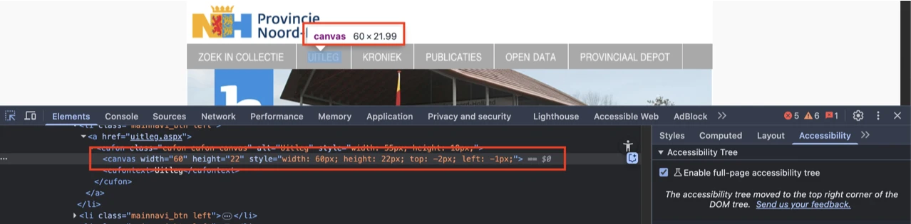
Als je een tekst als afbeelding plaatst, kunnen veel bezoekers er niets meer mee. Dit komt doordat ze de tekst in de afbeelding niet kunnen vergroten of aanpassen.
#### Oplossing:
Het is beter om deze tekst gewoon als normale tekst op deze pagina te plaatsen. Op die manier kunnen mensen de grootte, kleur of het lettertype aanpassen zodat het voor hen leesbaarder wordt. Als de tekst in de afbeelding zit gebakken, kunnen ze dit niet doen.
### Kleurcontrast van tekst is te laag (tekst kleiner dan 24px en niet vetgedrukt)
Impact: MediumType: ContentWCAG: 1.4.3
Op alle pagina’s staat de tekst van de links in het bovenste navigatiemenu in lichtgrijze kleur (#EFEFEF) op een grijze achtergrond (#A9A9A9). De contrastratio is te laag en bedraagt 2,0:1.
Wanneer deze links met de muisaanwijzer worden benaderd, staat de tekst op een lichtgrijze achtergrond (#D9DADE). De contrastratio is dan nog lager en bedraagt 1,3:1.
Oplossing:
Deze tekst is kleiner dan 24px en niet vetgedrukt, daarom moet het contrast minimaal 4,5:1 zijn. Op deze pagina staat een instructie die uitlegt hoe je kleurcontrast kan testen: https://properaccess.nl/hoe-test-ik-kleurcontrast/.
#4 - Bij 400% zoom is een horizontale scrollbar aanwezig
Impact: MediumType: TechniekWCAG: 1.4.10
Op alle pagina's verschijnt een scrollbar wanneer de pagina wordt bekeken met een schermresolutie van 1280 bij 1024 pixels en wordt ingezoomd tot 400%.
Horizontaal scrollen is niet toegestaan, ook niet als de viewport is ingesteld of ingezoomd op 320 CSS-pixels breed (voor verticale inhoud) of 256 CSS-pixels hoog (voor horizontale inhoud). Zorg ervoor dat de tekst binnen het scherm past. Alleen als scrollen in beide richtingen echt nodig is voor de betekenis of het gebruik van de inhoud mag het wel. Uitzonderingen zijn tabellen, betekenisvolle afbeeldingen en kaarten. Deze moeten leesbaar blijven, dus binnen deze elementen mag je wel scrollen.
Oplossing:
Controleer of het horizontaal scrollen nodig is. Als dit niet zo is, zorg dan dat horizontaal scrollen niet mogelijk is bij inzoomen.
#5 - In de opmaaktabel heeft een td-element toegankelijke naam met volledige inhoud van de tabel
Impact: MediumType: ContentWCAG: 1.3.1
Op alle pagina wordt in de code een table-element gebruikt om de lay-out te creëren. Het td-element binnen dit table-element, dat de inhoud van de pagina bevat, heeft een toegankelijke naam die de volledige hoofdinhoud herhaalt. Dit kan verwarrend zijn voor blinde bezoekers, omdat de inhoud hierdoor dubbel wordt voorgelezen.
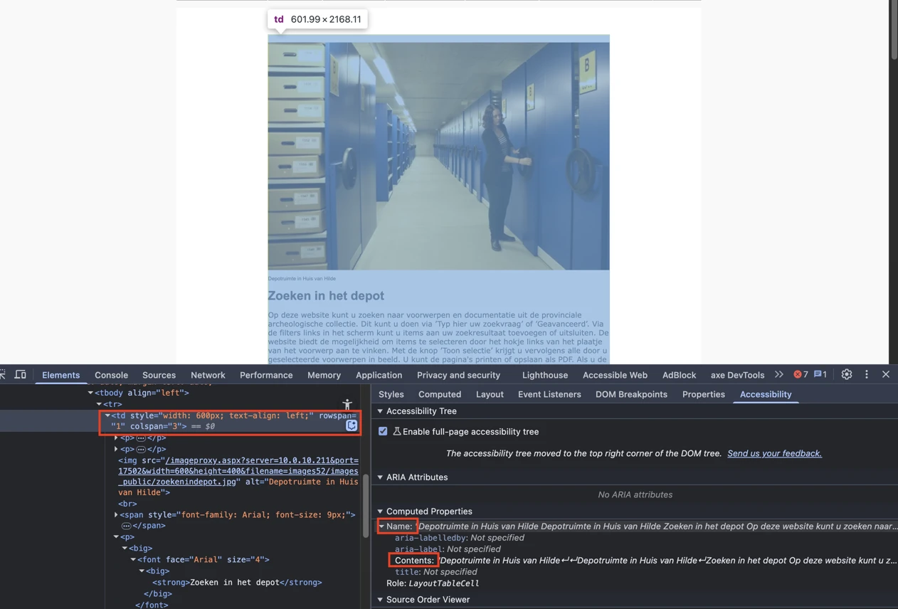
#### Oplossing:
De toegankelijke naam van het td-element moet worden verwijderd, zodat hulpsoftware het element als een puur layout-element behandelt.
### Alle pagina’s hebben dezelfde `title`-tekst
Impact: MediumType: ContentWCAG: 2.4.2
Op alle pagina’s staat in het title-element van de pagina steeds dezelfde tekst: “Provincie Noord-Holland - Archeologie”.
Dit is niet de bedoeling. In het title-element van elke pagina moet een unieke tekst staan die de inhoud van de pagina beschrijft, bij voorkeur gevolgd door de naam van de organisatie. Staat hier bij twee of meer pagina’s dezelfde tekst? Dan kan dit verwarrend zijn voor de bezoeker. De navigatie tussen pagina’s wordt dan ook lastiger.
Oplossing:
Verander de tekst in het title-element van, zodat deze op elke pagina uniek is en de inhoud van de pagina nauwkeurig beschrijft.
#6 - Kleurcontrast van tekst is te laag (tekst kleiner dan 24px en niet vetgedrukt)
Impact: MediumType: ContentWCAG: 1.4.3
Op de website verschijnt bij het eerste bezoek een cookiebanner. Op deze banner staat witte tekst op een blauwe achtergrond (#2891E1). De contrastratio is te laag en bedraagt 3,4:1. Dit geldt voor de tekst die begint met “Deze site gebruikt cookies …” en voor de linktekst “Ik accepteer niet”. De witte tekst van de link “Ik accepteer” staat op een oranje achtergrond (#FBAF01) met een contrastratio van 1,9:1.
Oplossing:
Deze teksten zijn kleiner dan 24px en niet vetgedrukt, daarom moet het contrast minimaal 4,5:1 zijn. Op deze pagina staat een instructie die uitlegt hoe je kleurcontrast kan testen: https://properaccess.nl/hoe-test-ik-kleurcontrast/ .
#7 - Cookiebanner krijgt niet als eerste toetsenbordfocus
Impact: MediumType: TechniekWCAG: 2.4.3
Bij het eerste bezoek aan de website verschijnt een cookiebanner. Deze banner krijgt echter niet als eerste de toetsenbordfocus, terwijl dat wel zou moeten. De banner bedekt de pagina-inhoud, en als de focus daar niet direct naartoe gaat, kunnen bezoekers die alleen met het toetsenbord navigeren het bericht niet sluiten. Om de banner te sluiten, moet helemaal naar de onderkant van de pagina worden genavigeerd.
Oplossing:
Zorg dat de focus als eerste naar de cookiebanner gaat.
#8 - Tekst is niet meer leesbaar als tekstafstand wordt aangepast
Impact: MediumType: TechniekWCAG: 1.4.12
In de cookiebanner wordt een deel van de tekst gedeeltelijk onzichtbaar en onleesbaar wanneer bezoekers tekstafstanden toepassen zoals beschreven in dit succescriterium. De link “Ik accepteer” overlapt dan de tekst.
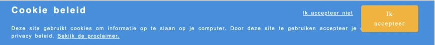
Sommige bezoekers passen de weergave van de tekst aan, zodat zij de tekst beter kunnen lezen. Denk aan het vergroten van de afstand tussen regels, letters of woorden. Het gaat bijvoorbeeld om mensen met dyslexie. Als een bezoeker dit doet op de manier die in succescriterium 1.4.12 is beschreven, moet alles goed blijven werken. Bovendien moet de tekst leesbaar blijven.
#### Oplossing:
Je lost dit op door de hoogte en breedte van de containers van de tekst responsief te maken.
### Bezoekers die inzoomen tot 200% kunnen niet meer alle functies gebruiken
Impact: MediumType: TechniekWCAG: 1.4.4, 1.4.10
Wanneer de tekst op deze pagina wordt ingezoomd tot 200%, zijn de links op de cookiebanner met de tekst “Bekijk de proclaimer.”, “Ik accepteer” en “Ik accepteer niet” niet zichtbaar en niet bedienbaar. Ook raakt een deel van de tekst gedeeltelijk weg, zoals “... voorwaarden en privacy beleid.”.
Bij een schermresolutie van 1280 bij 1024 pixels en een zoomniveau van 400% raakt een deel van de tekst gedeeltelijk weg, zoals “... je computer. Door deze site te gebruiken accepteer je de voorwaarden en privacy beleid.”.
Oplossing:
Zorg dat alles nog werkt als een bezoeker inzoomt tot 200% en tot 400% op een scherm van 1280 bij 1024 pixels.
Link naar pagina: Bewoningsgeschiedenis van Texel
Disclaimer
Op deze pagina staan de links “Overzicht” en “Verder”. De problemen met deze links zijn gelijk aan de eerder beschreven punten in de sectie met betrekking tot Het Oer-IJ heropend.
#9 - Kop is niet gemarkeerd als koptekst
Impact: MediumType: ContentWCAG: 1.3.1
Op deze pagina zijn de volgende teksten niet gemarkeerd als koppen: "Bewoningsgeschiedenis van Texel", "Noord-Hollandse Archeologische Publicaties-13" en "Bijlagen".
Oplossing:
Dit voorkom je door koppen altijd te markeren met het juiste HTML-element, op het juiste kopniveau: h1, h2, h3, h4, h5 of h6. Meestal kun je het kopniveau kiezen via de content-editor in je CMS. De HTML-code voor de kop wordt dan automatisch toegepast.
#10 - De opsomming is onjuist opgebouwd.
Impact: MediumType: ContentWCAG: 1.3.1
Op deze pagina staat onder "Bijlagen" een lijst met 3 items, maar de juiste markering ontbreekt. Elk lijstitem is verkeerd gemarkeerd met een apart ul-element terwijl het om één lijst gaat.
Oplossing:
Zorg dat alle opsommingen op de juiste manier in de code zijn gemarkeerd:
Vervang de drie losse ul-elementen door één ul-element.
Plaats elk lijstitem in een eigen li-element.
Als een item links bevat, moeten deze binnen hetzelfde li-element blijven staan.
Meer over lijsten en waarom ze belangrijk zijn lees je op deze pagina https://properaccess.nl/waarom-correcte-html-lijsten-het-verschil-maken-in-toegankelijkheid/.
#11 - Er zijn links met dezelfde tekst maar een andere bestemming
Impact: MediumType: ContentWCAG: 2.4.4
Op deze pagina staan links met de tekst: "Open PDF", maar de bestemming van deze links is verschillend.
Oplossing:
Zorg dat links met dezelfde tekst ook naar dezelfde bestemming leiden. Als het om een andere bestemming gaat, moet de linktekst ook anders zijn.
Link naar pagina: Een Beemster poldermolen
Disclaimer
Op deze pagina staan de links “Overzicht” en “Verder”. De problemen met deze links zijn gelijk aan de eerder beschreven punten in de sectie met betrekking tot Het Oer-IJ heropend.
#12 - Kop is niet gemarkeerd als koptekst
Impact: MediumType: ContentWCAG: 1.3.1
Op deze pagina zijn de volgende teksten niet gemarkeerd als koppen: "Een Beemster poldermolen", "Noord-Hollandse Archeologische Publicaties-9" en "Bijlagen".
Oplossing:
Dit voorkom je door koppen altijd te markeren met het juiste HTML-element, op het juiste kopniveau: h1, h2, h3, h4, h5 of h6. Meestal kun je het kopniveau kiezen via de content-editor in je CMS. De HTML-code voor de kop wordt dan automatisch toegepast.
#13 - Opsomming is niet opgebouwd met het HTML-element ul of ol
Impact: MediumType: ContentWCAG: 1.3.1
Op deze pagina staat onder "Bijlagen" een lijst met 7 items, maar de juiste markering ontbreekt.
Tekst die eruitziet als een opsomming, moet ook zo in de code worden gemarkeerd. Je gebruikt voor lijsten en opsommingen de HTML-elementen ol (lijst met cijfers) of ul (lijst met bullets). Meestal is hier een knop voor in de content-editor van een CMS. Hulpsoftware weet dan hoe de tekst is gestructureerd. Bovendien kondigen schermlezers dan het aantal items in de lijst aan, voordat ze die gaan voorlezen. Zo weet een blinde bezoeker hoeveel informatie er nog komt. Meer over lijsten en waarom ze belangrijk zijn lees je op deze pagina https://properaccess.nl/waarom-correcte-html-lijsten-het-verschil-maken-in-toegankelijkheid/.
Oplossing:
Zorg dat alle opsommingen op de juiste manier in de code zijn gemarkeerd.
#14 - Onzichtbaar element krijgt toetsenbordfocus
Impact: GrootType: TechniekWCAG: 2.4.3
Op deze pagina komt het toetsenbordfocus terecht op een onzichtbaar interactief element onderaan de pagina na de link "Draaioorder molengang".
De toetsenbordfocus mag niet terechtkomen op onzichtbare interactieve elementen (links, knoppen, formuliervelden). Als dat wel gebeurt, kan een bezoeker ze onbedoeld activeren.
Oplossing:
Zorg dat alleen elementen die zichtbaar zijn toetsenbordfocus kunnen krijgen en dat de focusvolgorde logisch is.
#15 - Link heeft geen toegankelijke naam
Impact: GrootType: TechniekWCAG: 4.1.2, 2.4.4
Op deze pagina staat onderaan een onzichtbare link na de link "Draaioorder molengang". Deze link heeft geen toegankelijke naam.
Hierdoor begrijpen bezoekers die een schermlezer gebruiken niet wat de bestemming of de functie is van de link.
Oplossing:
Voorzie deze link van een toegankelijke naam, door een beschrijvende linktekst, een aria-label of een andere geschikte techniek te gebruiken.
#16 - De linknaam is onvoldoende beschrijvend
Impact: GrootType: TechniekWCAG: 2.4.4
Op deze pagina staat een link met de tekst "Open PDF". Deze tekst beschrijft echter niet goed de bestemming van deze links.
Een blinde bezoeker weet daardoor niet wat deze link precies doet.
#17 - Decoratieve tekens zijn niet verborgen voor schermlezers
Impact: MediumType: ContentWCAG: 1.1.1
Op deze pagina staan voor de link “Overzicht” decoratieve tekens “<<” en “>>” die worden aangekondigd door schermlezers.
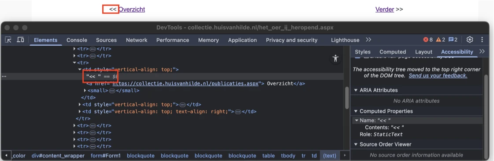
Een decoratieve teken geeft geen extra informatie en moet daarom verborgen worden voor schermlezers.
#### Oplossing:
Met `aria-hidden=”true”` kun je decoratieve tekens verbergen voor schermlezers. Andere oplossingen zijn mogelijk.
### Naam van de link beschrijft niet waar de link naartoe leidt
Impact: GrootType: TechniekWCAG: 2.4.4
Op deze pagina verwijst de link met de tekst "Overzicht" naar de pagina met alle bronnen en de link met de tekst “Verder” naar de pagina met een van de brochures. Deze teksten beschrijven echter niet nauwkeurig de bestemming van de links.
Een blinde bezoeker weet daardoor niet wat deze link precies doet.
Oplossing:
Voeg tekst toe die deze link goed beschrijft.
#18 - Kop is niet gemarkeerd als koptekst
Impact: MediumType: ContentWCAG: 1.3.1
Op deze pagina zijn de teksten "Het Oer-IJ heropend" en "Noord-Hollandse Archeologische Publicaties-16" niet gemarkeerd als koppen.
Oplossing:
Dit voorkom je door koppen altijd te markeren met het juiste HTML-element, op het juiste kopniveau: h1, h2, h3, h4, h5 of h6. Meestal kun je het kopniveau kiezen via de content-editor in je CMS. De HTML-code voor de kop wordt dan automatisch toegepast.
#19 - Onzichtbaar element krijgt toetsenbordfocus
Impact: MediumType: TechniekWCAG: 2.4.3
Op deze pagina komt de toetsenbordfocus terecht op een onzichtbaar interactief element na de link met de tekst “Open PDF”.
Oplossing:
Zorg dat alleen elementen die zichtbaar zijn toetsenbordfocus kunnen krijgen en dat de focusvolgorde logisch is.
#20 - Link heeft geen tekst, waardoor linkdoel onbekend is
Impact: MediumType: TechniekWCAG: 2.4.4, 4.1.2
Op deze pagina staat na de link met de tekst “Open PDF” een link zonder inhoud, waardoor het doel van de link niet herkenbaar is.
Een blinde bezoeker weet daardoor niet waar de link naartoe zal leiden.
Dit probleem voldoet ook niet aan succescriterium 4.1.2, omdat de link geen toegankelijke naam heeft.
Oplossing:
Om dit op te lossen moet je de link content geven. Dat kun je als volgt doen:
Tekst toevoegen aan het a-element: voeg beschrijvende tekst toe binnen het element.
aria-label gebruiken: voeg het aria-label-attribuut toe aan de link en plaats hier een beknopte beschrijving van de bestemming in.
Zorg dat alle links een duidelijk linkdoel hebben.
#21 - De linknaam is onvoldoende beschrijvend
Impact: MediumType: TechniekWCAG: 2.4.4
Op deze pagina staat een link met de tekst "Open PDF". Deze tekst beschrijft echter niet nauwkeurig de bestemming van de link.
Een blinde bezoeker weet daardoor niet wat deze link precies doet.
#22 - Twee afbeeldingen aanwezig met hetzelfde tekstalternatief
Impact: MediumType: ContentWCAG: 1.1.1
Het logo bovenaan de website is geïmplementeerd met een img-element en heeft als alt-tekst: “Huis van Hilde | Provincie Noord-Holland”. De afbeelding onder de hoofdnavigatie heeft dezelfde alt-tekst: “Huis van Hilde | Provincie Noord-Holland”.
Deze herhaling zorgt voor dubbele aankondigingen voor schermlezers, wat verwarrend kan zijn.
Oplossing:
Om dit op te lossen, moet de beschrijvende alt-tekst op het logo behouden blijven en moet de afbeelding onder de hoofdnavigatie als decoratief worden gemarkeerd met een leeg alt-attribuut (alt=""). Als de afbeelding onder de hoofdnavigatie een beschrijving nodig heeft, moet een beschrijvende en betekenisvolle tekst worden toegevoegd die de afbeelding beschrijft in plaats van de logo-tekst te herhalen.
#23 - Bewegende content kan niet gestopt, gepauzeerd of verborgen worden
Impact: MediumType: TechniekWCAG: 2.2.2
Op deze pagina staat een carrousel die automatisch om de paar seconden een nieuwe afbeelding toont. Deze carrousel kan niet worden gestopt, gepauzeerd of verborgen.
Bewegende content kan storend zijn voor mensen met een cognitieve beperking. De bewegende inhoud zorgt voortdurend voor afleiding terwijl ze de tekst op deze pagina proberen te lezen.
Oplossing:
Zorg dat er een manier is waarmee bezoekers beweging kunnen stoppen, pauzeren of verbergen. Dit geldt voor alle bewegende, knipperende, scrollende of automatisch actualiserende content die tegelijk met andere informatie wordt getoond, automatisch start en langer dan 5 seconden speelt.
#24 - Knop heeft niet de juiste toegankelijke rol en mist een toegankelijke naam
Impact: GrootType: TechniekWCAG: 4.1.2
Op deze pagina bevat de carrousel twee pijlen om tussen de dia’s met afbeeldingen te schakelen. Deze pijlen hebben niet de juiste toegankelijke rol en missen toegankelijke namen.
Elk HTML-element heeft standaard een rol. Dit betekent dat het element bepaalde eigenschappen en functies heeft om informatie aan de bezoeker te geven of om informatie van de bezoeker te ontvangen. De rol bepaalt dus wat het element doet. Schermlezers en andere hulpmiddelen moeten de correcte rol van elk element op een webpagina kennen. Zo kunnen ze op een slimme manier met het element omgaan en aan de bezoeker uitleggen wat het element doet.
Oplossing:
Zorg dat de knop de juiste toegankelijke rol heeft. Gebruik het button-element. Deze knoppen moeten worden voorzien van toegankelijke namen, bijvoorbeeld door gebruik te maken van een beschrijvende knoptekst, een aria-label of andere geschikte technieken.
#25 - Knop kan niet bediend worden met spatiebalk en Enter-toets
Impact: GrootType: TechniekWCAG: 2.1.1
Op deze pagina zijn de knoppen en links in de carrousel niet toegankelijk met het toetsenbord.
Hetzelfde probleem doet zich voor bij het printicoon onderaan de pagina.
Oplossing:
Zorg dat de knop toetsenbordfocus ontvangt en zowel met de spatiebalk als de Enter-toets bediend kan worden.
#26 - Kleurcontrast van iconen is niet voldoende
Impact: MediumType: TechniekWCAG: 1.4.11
Op deze pagina staan knoppen met pijliconen in de carrousel. De witte pijliconen hebben een achtergrond die bestaat uit afbeeldingen. Hierdoor kan de achtergrondkleur variëren en is het kleurcontrast van de witte iconen onvoldoende. Op een lichtgrijze achtergrond (#F8F8F8) is de contrastratio 1,1:1, wat lager is dan de vereiste 3,0:1.
Oplossing:
Zorg dat de iconen voldoende contrast hebben.
#27 - Link met een afbeelding, linkdoel is onbekend
Impact: Groot Type: ContentWCAG: 1.1.1, 2.4.4, 4.1.2
Op deze pagina functioneren afbeeldingen in de carrousel als links, maar het alt-attribuut ontbreekt.
Daardoor heeft de link geen inhoud en is het onduidelijk naar welke bestemming de link verwijst. Al deze punten zorgen voor afkeur op succescriteria 1.1.1 en 2.4.4. Dit leidt ook tot afkeur op succescriterium 4.1.2, omdat de link hierdoor geen toegankelijke naam heeft.
Hetzelfde probleem doet zich voor bij het printicoon onderaan de pagina, waar het alt-attribuut eveneens ontbreekt.
Oplossing:
Je lost dit op door de link te voorzien van toegankelijke, tekstuele inhoud. Dit kun je als volgt doen:
Verborgen tekst aan de link toevoegen: voeg beschrijvende tekst toe in het a-element, die je visueel verbergt met CSS (bijvoorbeeld met de class .sr-only).
aria-label gebruiken: voeg een aria-label-attribuut toe aan het a-element met een beknopte beschrijving van de bestemming van de link.
Combineren met aangrenzende tekst: je kunt de link semantisch koppelen aan bestaande tekst die erboven of eronder staat. Dit kan vaak met een kop-element of een lijststructuur.
#28 - Kop is niet gemarkeerd als koptekst
Impact: MediumType: ContentWCAG: 1.3.1
Op deze pagina zijn bepaalde teksten niet gemarkeerd als koppen: de tekst “Provinciaal depot Noord-Holland”, de tekst “Stel uw zoekvraag samen” in het dialoogvenster dat wordt geopend via “Geavanceerd”.
Bezoekers die hulpsoftware gebruiken hebben niets aan een (tussen)kop die er wel uitziet als kop, maar niet als kop is gemarkeerd. Via de koppen op een pagina kunnen gebruikers van hulpsoftware de inhoud scannen of snel naar een bepaalde sectie springen. Maar dat kan alleen als de kop ook echt in de code staat. Als koppen alleen visueel als kop zijn vormgegeven (bijvoorbeeld vetgedrukt), ontstaat bovendien nog een ander probleem: de structuur van de informatie in de code wijkt dan af van de visuele structuur. Op deze pagina staat een instructie hoe zelf koppen op een webpagina kan testen: https://properaccess.nl/zo-controleer-je-de-koppenstructuur-van-je-website/.
Oplossing:
Dit voorkom je door koppen altijd te markeren met het juiste HTML-element, op het juiste kopniveau: h1, h2, h3, h4, h5 of h6. Meestal kun je het kopniveau kiezen via de content-editor in je CMS. De HTML-code voor de kop wordt dan automatisch toegepast.
#29 - Keuzevakjes hebben niet de juiste rol
Impact: GrootType: TechniekWCAG: 4.1.2
Op deze pagina staan selectievakjes onder “Deelcollecties”, maar de juiste checkbox-rol ontbreekt. Daarnaast is in de code niet gedefinieerd of de selectievakjes zijn geselecteerd of niet. Voor bezoekers die de pagina kunnen zien, is het duidelijk of een vakje is aangevinkt, maar voor blinde of slechtziende bezoekers die een schermlezer gebruiken, is dit niet waarneembaar.
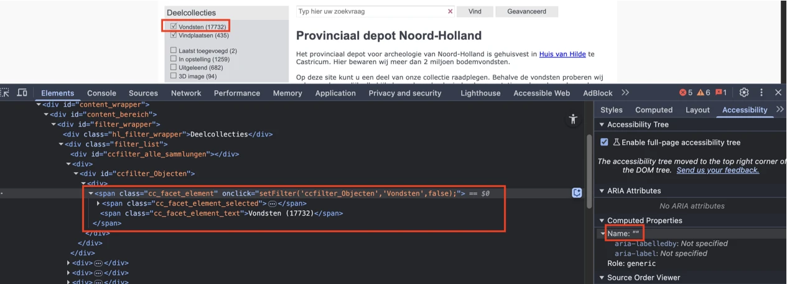
Hierdoor ziet een schermlezer niet dat het keuzevakjes (checkboxes) zijn, en krijgt een blinde bezoeker deze informatie dus niet door. De bezoeker weet dan niet hoe hij deze elementen kan gebruiken.
#### Oplossing:
Gebruik het standaard HTML-element `<input type="checkbox">`. De geselecteerde toestand wordt dan automatisch beschikbaar gesteld aan hulpsoftware. Kan dit echt niet? Geef de keuzevakjes dan de juiste rol door role="checkbox" toe te voegen. Voeg ook het attribuut aria-checked toe om aan te geven of de keuzevakjes zijn geselecteerd of niet.
### Interactieve elementen hebben niet de juiste rol
Impact: GrootType: TechniekWCAG: 4.1.2
Op deze pagina ontbreken bij interactieve elementen de juiste toegankelijke rollen. Het gaat om de link met de tekst “Vind”, de knop met de tekst “Geavanceerd”, het interactieve element met de tekst “Zoek” in het dialoogvenster dat wordt geopend via “Geavanceerd” en andere soortgelijke elementen.
Oplossing:
Zorg ervoor dat alle interactieve elementen de juiste rol hebben.
#30 - Invoerveld is niet met het toetsenbord te bedienen
Impact: GrootType: TechniekWCAG: 2.1.1
Op deze pagina zijn de keuzevakjes onder “Deelcollecties” niet toegankelijk met het toetsenbord.
Hetzelfde probleem doet zich voor bij andere interactieve elementen op deze pagina, zoals de elementen met de teksten “Vind” en “Geavanceerd”, het interactieve element met de tekst “Zoek” in het dialoogvenster dat wordt geopend via “Geavanceerd”, en andere soortgelijke elementen.
Oplossing:
Zorg dat alle interactieve elementen met het toetsenbord kunnen worden bediend.
#31 - De relatie tussen selectievakjes is niet in de code vastgelegd
Impact: GrootType: TechniekWCAG: 1.3.1
Op deze pagina zijn groepen keuzevakjes aanwezig, voorafgegaan door de tekst "Deelcollecties". Hoewel deze visueel gegroepeerd zijn, is deze relatie niet gedefinieerd in de HTML.
Visueel vormen deze elementen een groep, maar die relatie is niet vastgelegd in de code.
Oplossing:
Je lost dit op door de elementen in een fieldset-element te plaatsen. Een fieldset met interactieve inhoud moet een naam hebben. Hiervoor kun je het legend-element gebruiken. Plaats hierin de tekst “Deelcollecties”.
#32 - Placeholdertekst wordt gebruikt als label voor een invoerveld
Impact: GrootType: TechniekWCAG: 3.3.2
Op deze pagina is een zoekveld aanwezig met de plaatshoudertekst “Typ hier uw zoekvraag”. Er is echter geen blijvend label; de plaatshoudertekst wordt gebruikt als label. Hetzelfde probleem doet zich voor in het dialoogvenster dat wordt geopend via “Geavanceerd”, bij de invoervelden met de plaatshoudertekst “Typ hier uw zoekvraag”.
Invoervelden moeten een label hebben dat altijd zichtbaar is. Je kunt hier dus niet een placeholder-tekst voor gebruiken, want die verdwijnt zodra de bezoeker begint te typen.
Oplossing:
Voeg een permanent zichtbaar label toe bij het invoerveld.
#33 - Knop heeft geen code die aangeeft dat er een popup opent
Impact: GrootType: TechniekWCAG: 4.1.2
Op deze pagina opent de knop met het label "Geavanceerd" een dialoogvenster, maar deze functionaliteit is niet aangegeven in de code.
Oplossing:
Voeg het attribuut aria-haspopup="dialog" toe aan de knop. Hierdoor weet hulpsoftware dat je met de knop een dialoogvenster opent.
Met het aria-expanded-attribuut kun je de toestand van het dialoogvenster (open of gesloten) aangeven ("true" of "false”). Let op: dit attribuut werkt alleen als beide acties (openen en sluiten) door dezelfde knop worden uitgevoerd.
#34 - Taalwisseling ontbreekt op anderstalige content
Impact: MediumType: ContentWCAG: 3.1.2
Op deze pagina bevindt zich in het dialoogvenster dat wordt geopend via “Geavanceerd” een knop met een “X”-icoon. De toegankelijke naam van deze knop is in een andere taal en bevat geen taalcode: “hide”.
Deze tekst wordt nu voorgelezen volgens de uitspraakregels van de primaire taal van de pagina. Die is ingesteld in het lang-attribuut op het html-element, in dit geval op “nl”. De schermlezer zou juist op de taal van de zin moeten overschakelen.
Oplossing:
Voeg een lang-attribuut met de juiste taalcode toe aan het element dat de tekst in een andere taal bevat. Als de tekst bijvoorbeeld in het Engels is, gebruik dan lang="en". Hierdoor schakelt de schermlezer over naar de juiste uitspraakregels. Een andere oplossing is om de tekst in het Nederlands te vertalen.
#35 - Kleurcontrast van iconen is niet voldoende
Impact: MediumType: TechniekWCAG: 1.4.11
op deze pagina heeft het oranje (#EC9316) “X”-icoon naast de tekst “Stel uw zoekvraag samen” in het dialoogvenster dat wordt geopend via “Geavanceerd” een contrastverhouding van 2,2:1 tegen de lichtgrijze achtergrond (#F7F7F7).
Het kleurcontrast van iconen moet minimaal 3,0:1 zijn.
Oplossing:
Zorg dat de iconen voldoende contrast hebben.
#36 - Hetzelfde toegankelijke naam is gebruikt voor verschillende invoervelden
Impact: GrootType: TechniekWCAG: 2.4.6
Op deze pagina bevinden zich in het dialoogvenster dat wordt geopend via “Geavanceerd” meerdere invoervelden met de toegankelijke naam “Typ hier uw zoekvraag”. Het verschil tussen deze invoervelden is niet duidelijk op basis van deze tekst.
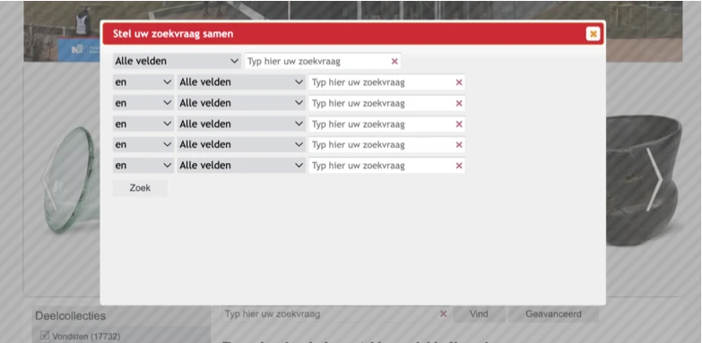
Je mag niet exact hetzelfde label gebruiken voor invoervelden waar je andere informatie in moet vullen. Zelfs niet als de velden erg op elkaar lijken. Het verschil moet duidelijk worden uit het label. Als er bijvoorbeeld twee invoervelden zijn voor “postcode” (één voor facturering en één voor verzending), moeten ze elk een uniek label hebben, zoals “Factuuradres: postcode” en “Verzendadres: postcode”.
#### Oplossing:
Pas de labels aan zodat het verschil tussen de velden duidelijk is.
### Keuzelijst heeft geen toegankelijke naam
Impact: GrootType: TechniekWCAG: 4.1.2, 2.5.3
Op deze pagina bevinden zich in het dialoogvenster dat wordt geopend via “Geavanceerd” keuzelijsten (select-elementen) met de beginwaarden “en” en “Alle velden”. De toegankelijke namen ontbreken. Hierdoor is de keuzelijst niet toegankelijk.
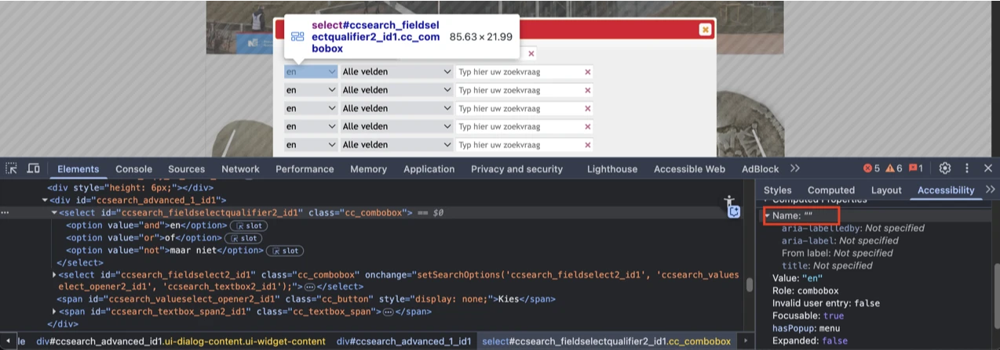
Dit voldoet ook niet aan succescriterium 2.5.3, omdat bezoekers die afhankelijk zijn van spraakbesturing commando’s geven op basis van zichtbare tekst. Als die tekst (de beginoptie) geen onderdeel is van de toegankelijke naam, zullen spraakcommando’s niet werken.
#### Oplossing:
Geef de `select`-elementen toegankelijke namen.
### De relatie tussen interactieve elementen is niet in de code vastgelegd
Impact: MediumType: TechniekWCAG: 1.3.1
Op deze pagina bevinden zich in het dialoogvenster dat wordt geopend via “Geavanceerd” groepen interactieve elementen, elk bestaande uit een keuzelijst en een tekstveld. Hoewel deze elementen visueel gegroepeerd zijn, is deze relatie niet gedefinieerd in de HTML.
Visueel vormen deze elementen groepen, maar die relatie is niet vastgelegd in de code.
Oplossing:
Je lost dit op door de elementen in een fieldset-element te plaatsen. Een fieldset met interactieve inhoud moet een naam hebben. Hiervoor kan het element legend worden gebruikt. Plaats de beschrijvende tekst in dit element, zodat bezoekers het verschil tussen deze groepen kunnen herkennen.
#37 - Meerdere alinea's zijn niet correct gemarkeerd
Impact: MediumType: ContentWCAG: 1.3.1
Op deze pagina staat onder "Provinciaal depot Noord-Holland" een tekstblok met meerdere alinea’s dat onjuist is gemarkeerd met div- en span-elementen.
Visueel lijkt de tekst uit meerdere alinea’s te bestaan: blokjes tekst met witruimtes ertussen. Deze structuur moet ook in de code staan.
Oplossing:
Plaats elke alinea in een eigen p-element. Het aantal alinea’s dat je visueel ziet, moet dus gelijk zijn aan het aantal p-elementen in de code.
#38 - Er zijn links met dezelfde toegankelijke namen maar een andere bestemming
Impact: GrootType: ContentWCAG: 2.4.4
Op deze pagina staan onder “Provinciaal depot Noord-Holland” links met afbeeldingen. De links met de zichtbare teksten “Prehistorie 300.000 – 12 voor Chr.” en “Middeleeuwen 450 tot 1500 na Chr.” hebben dezelfde toegankelijke naam: “Domburgfibula”. De links met de zichtbare teksten “Romeinse tijd 12 voor Chr. tot 450 na Chr.” en “Nieuwe Tijd 1500 tot heden” hebben dezelfde toegankelijke naam: “Kralen”. De bestemmingen van deze links zijn echter verschillend.
Er zijn dus meerdere links aanwezig op deze pagina met dezelfde tekst, maar een verschillend linkdoel. Dit kan verwarrend zijn voor bezoekers.
Oplossing:
Zorg dat links met dezelfde toegankelijke namen ook naar dezelfde bestemming leiden. Als het om een andere bestemming gaat, moeten de toegankelijke namen ook anders zijn.
#39 - Zichtbare linktekst komt niet terug in toegankelijke naam
Impact: GrootType: TechniekWCAG: 2.5.3
Op deze pagina staan onder “Provinciaal depot Noord-Holland” links met afbeeldingen van tekst. De zichtbare teksten, zoals “Prehistorie 300.000 – 12 voor Chr.”, zijn niet opgenomen in de toegankelijke namen van deze links.
Als de zichtbare tekst van een link niet voorkomt in de toegankelijke naam, kan de link niet met spraakbediening worden bediend. De commando’s die de bezoeker uitspreekt door de tekst van de link voor te lezen, zullen de link dan niet activeren.
Oplossing:
Voeg de zichtbare tekst toe aan de toegankelijke naam, bij voorkeur vooraan. In dit geval pas je het alt attribuut van het img element aan, zodat de zichtbare tekst er ook in komt te staan.
#40 - Kleurcontrast van tekst is te laag (tekst groter dan 24px)
Impact: MediumType: ContentWCAG: 1.4.3
Op deze pagina staan onder “Provinciaal depot Noord-Holland” links met afbeeldingen van tekst. Omdat de achtergrond van de tekst een afbeelding is, kan de kleur variëren en wordt de contrastratio op sommige punten onvoldoende. De witte tekst “Romeinse tijd 12 voor Chr. tot 450 na Chr.” op een lichte achtergrond heeft een contrastratio van 2,8:1. De witte tekst “Middeleeuwen 450 tot 1500 na Chr.” op een oranje achtergrond heeft een contrastratio van 1,8:1.
Oplossing:
Deze tekst is groter dan 24px, daarom moet het contrast minimaal 3,0:1 zijn. Op deze pagina staat een instructie die uitlegt hoe je kleurcontrast kan testen: https://properaccess.nl/hoe-test-ik-kleurcontrast/ .
#41 - Tekst is als afbeelding geplaatst
Impact: MediumType: ContentWCAG: 1.4.5
Op deze pagina staan onder “Provinciaal depot Noord-Holland” links met afbeeldingen. Deze afbeeldingen bevatten ingebedde tekst, zoals “Prehistorie 300.000 – 12 voor Chr.”.
Oplossing:
Het is beter om deze tekst gewoon als normale tekst op deze pagina te plaatsen. Op die manier kunnen mensen de grootte, kleur of het lettertype aanpassen zodat het voor hen leesbaarder wordt. Als de tekst in de afbeelding zit gebakken, kunnen ze dit niet doen.
Link naar pagina: Kennemerland in de Bronstijd
Disclaimer
Op deze pagina staan de links “Overzicht” en “Verder”. De problemen met deze links zijn gelijk aan de eerder beschreven punten in de sectie met betrekking tot Het Oer-IJ heropend.
#42 - Kop is niet gemarkeerd als koptekst
Impact: MediumType: ContentWCAG: 1.3.1
Op deze pagina zijn de volgende teksten niet gemarkeerd als koppen: "Kennemerland in de Bronstijd" en "Noord-Hollandse Archeologische Publicaties-1".
Oplossing:
Dit voorkom je door koppen altijd te markeren met het juiste HTML-element, op het juiste kopniveau: h1, h2, h3, h4, h5 of h6. Meestal kun je het kopniveau kiezen via de content-editor in je CMS. De HTML-code voor de kop wordt dan automatisch toegepast.
#43 - De linknaam is onvoldoende beschrijvend
Impact: GrootType: TechniekWCAG: 2.4.4
Op deze pagina staat een link met de tekst: "Open PDF". Deze tekst beschrijft echter niet goed de bestemming van de link.
Een blinde bezoeker weet daardoor niet wat deze link precies doet.
Oplossing:
Voeg tekst toe die deze link goed beschrijft.
#44 - Onzichtbaar element krijgt toetsenbordfocus
Impact: GrootType: TechniekWCAG: 2.4.3
Op deze pagina komt het toetsenbordfocus terecht op een onzichtbaar interactief element onderaan de pagina na de link "Kennemerland".
De toetsenbordfocus mag niet terechtkomen op onzichtbare interactieve elementen (links, knoppen, formuliervelden). Als dat wel gebeurt, kan een bezoeker ze onbedoeld activeren.
Oplossing:
Zorg dat alleen elementen die zichtbaar zijn toetsenbordfocus kunnen krijgen en dat de focusvolgorde logisch is.
#45 - Link heeft geen toegankelijke naam
Impact: GrootType: TechniekWCAG: 4.1.2, 2.4.4
Op deze pagina staat onderaan een onzichtbare link na de link "Kennemerland". Deze link heeft geen toegankelijke naam.
Hierdoor begrijpen bezoekers die een schermlezer gebruiken niet wat de bestemming of de functie is van de link.
Oplossing:
Voorzie deze link van een toegankelijke naam, door gebruik te maken van een beschrijvende linktekst, een aria-label of een andere geschikte techniek.
Link naar pagina: Kennemerland in metaalvondsten
Disclaimer
Op deze pagina staan de links “Overzicht” en “Verder”. De problemen met deze links zijn gelijk aan de eerder beschreven punten in de sectie met betrekking tot Het Oer-IJ heropend.
#46 - Kop is niet gemarkeerd als koptekst
Impact: MediumType: ContentWCAG: 1.3.1
Op deze pagina zijn de volgende teksten niet gemarkeerd als koppen: "Kennemerland in metaalvondsten", "Noord-Hollandse Archeologische Publicaties-11" en "Concordans".
Oplossing:
Dit voorkom je door koppen altijd te markeren met het juiste HTML-element, op het juiste kopniveau: h1, h2, h3, h4, h5 of h6. Meestal kun je het kopniveau kiezen via de content-editor in je CMS. De HTML-code voor de kop wordt dan automatisch toegepast.
#47 - De linknaam is onvoldoende beschrijvend
Impact: GrootType: TechniekWCAG: 2.4.4
Op deze pagina staan links met de teksten: "Open PDF", "PDF (615 kB)" en "Excel (57 kB)". Deze teksten beschrijven echter niet goed de bestemming van deze links.
Een blinde bezoeker weet daardoor niet wat deze link precies doet.
Oplossing:
Voeg tekst toe die deze link goed beschrijft.
#48 - Onzichtbaar element krijgt toetsenbordfocus
Impact: GrootType: TechniekWCAG: 2.4.3
Op deze pagina komt het toetsenbordfocus terecht op een onzichtbaar interactief element onderaan de pagina na de link "collectie".
De toetsenbordfocus mag niet terechtkomen op onzichtbare interactieve elementen (links, knoppen, formuliervelden). Als dat wel gebeurt, kan een bezoeker ze onbedoeld activeren.
Oplossing:
Zorg dat alleen elementen die zichtbaar zijn toetsenbordfocus kunnen krijgen en dat de focusvolgorde logisch is.
#49 - Link heeft geen toegankelijke naam
Impact: GrootType: TechniekWCAG: 4.1.2, 2.4.4
Op deze pagina staat onderaan een onzichtbare link na de link "collectie". Deze link heeft geen toegankelijke naam.
Hierdoor begrijpen bezoekers die een schermlezer gebruiken niet wat de bestemming of de functie is van de link.
Oplossing:
Voorzie deze link van een toegankelijke naam, door een beschrijvende linktekst, een aria-label of een andere geschikte techniek te gebruiken.
Op deze pagina zijn de teksten "Archeologische kroniek van Noord-Holland", “Downloaden of bestellen”, “Aanleveren teksten” en “Kronieken in Historisch Tijdschrift Holland” onjuist gemarkeerd met een strong-element in plaats van met een correct kopniveau.
Oplossing:
Dit voorkom je door koppen altijd te markeren met het juiste HTML-element, op het juiste kopniveau: h1, h2, h3, h4, h5 of h6.
#50 - Relatie tussen links in een groep is niet in HTML vastgelegd
Impact: MediumType: TechniekWCAG: 1.3.1
Op deze pagina is een groep links met afbeeldingen die visueel als een groep worden gepresenteerd, maar deze groepering is niet terug te zien in de HTML-structuur. Zie bijvoorbeeld de links met de tekst: “De archeologische kroniek van Noord-Holland 2023”.
Als het voor een ziende bezoeker duidelijk is dat een groep links bij elkaar hoort, dan moet die structuur ook in de HTML-code aanwezig zijn.
Een vergelijkbaar probleem doet zich voor bij de links onder “Kronieken in Historisch Tijdschrift Holland”. Ook hier worden de links visueel als een groep gepresenteerd, maar deze groepering is niet gedefinieerd in de HTML-structuur.
Oplossing:
Neem de elementen op in een ul- of nav-element.
#51 - Onzichtbaar element krijgt toetsenbordfocus
Impact: MediumType: TechniekWCAG: 2.4.3
Op deze pagina komt de toetsenbordfocus terecht op een onzichtbaar interactief element na de link met de tekst “De archeologische kroniek van Noord-Holland 2010”.
De toetsenbordfocus mag niet terechtkomen op onzichtbare interactieve elementen (links, knoppen, formuliervelden). Als dat wel gebeurt, kan een bezoeker ze onbedoeld activeren.
Oplossing:
Zorg dat alleen elementen die zichtbaar zijn toetsenbordfocus kunnen krijgen en dat de focusvolgorde logisch is.
#52 - Link heeft geen tekst, waardoor linkdoel onbekend is
Impact: MediumType: TechniekWCAG: 2.4.4, 4.1.2
Op deze pagina bevindt zich na de link met de tekst “De archeologische kroniek van Noord-Holland 2010” een link zonder inhoud, waardoor het doel van de link niet herkenbaar is.
Een blinde bezoeker weet daardoor niet waar de link naartoe zal leiden.
Dit probleem voldoet ook niet aan succescriterium 4.1.2, omdat de link geen toegankelijke naam heeft.
Oplossing:
Om dit op te lossen moet je de link content geven. Dat kun je als volgt doen:
Tekst toevoegen aan het a-element: voeg beschrijvende tekst toe binnen het element.
aria-label gebruiken: voeg het aria-label-attribuut toe aan de link en plaats hier een beknopte beschrijving van de bestemming in.
Zorg dat alle links een duidelijk linkdoel hebben.
Link naar pagina: Noord-Holland in het 1e millennium
Disclaimer
Op deze pagina staan de links “Overzicht” en “Verder”. De problemen met deze links zijn gelijk aan de eerder beschreven punten in de sectie met betrekking tot Het Oer-IJ heropend.
#53 - Kop is niet gemarkeerd als koptekst
Impact: MediumType: ContentWCAG: 1.3.1
Op deze pagina zijn de teksten "Noord-Holland in het 1e millennium", “Hoofdstukken en auteurs:” en "Open pdf per deel:" niet gemarkeerd als koppen.
Oplossing:
Dit voorkom je door koppen altijd te markeren met het juiste HTML-element, op het juiste kopniveau: h1, h2, h3, h4, h5 of h6. Meestal kun je het kopniveau kiezen via de content-editor in je CMS. De HTML-code voor de kop wordt dan automatisch toegepast.
#54 - Twee afbeeldingen met hetzelfde tekstalternatief
Impact: MediumType: ContentWCAG: 1.1.1
Op deze pagina staan twee afbeeldingen die zijn geïmplementeerd met een img-element en dezelfde alt-tekst hebben: “Noord-Holland in het 1e millennium”. Het gaat om de afbeelding met de covers van de boeken en de afbeelding onder de tekst die begint met: “De eerste hoofdstukken schetsen …”.
Deze herhaling zorgt voor dubbele aankondigingen voor schermlezers, wat verwarrend kan zijn.
Oplossing:
Afbeeldingen die informatie overbrengen, moeten een betekenisvolle alternatieve tekst hebben die de belangrijke informatie in de afbeelding beschrijft. Om herhaling te voorkomen, moet deze alternatieve tekst uniek en beschrijvend zijn.
#55 - Relatie tussen links in een groep is niet in HTML vastgelegd
Impact: MediumType: TechniekWCAG: 1.3.1
Op deze pagina staat onder "Open pdf per deel" een groep links die visueel als een groep wordt gepresenteerd, maar deze groepering is niet terug te zien in de HTML-structuur.
Als het voor een ziende bezoeker duidelijk is dat een groep links bij elkaar hoort, dan moet die structuur ook in de HTML-code aanwezig zijn.
Oplossing:
Neem de elementen op in een ul- of nav-element.
#56 - Lijstelement heeft directe kinderen die niet zijn toegestaan
Impact: MediumType: TechniekWCAG: 1.3.1
Op deze pagina staat onder "Hoofdstukken en auteurs" een lijst met 14 items, maar deze is niet correct gemarkeerd. De link “English translation of chapter 12 including a summary of both volumes (8,5 MB)” hoort bij item 12, maar is in de code niet opgenomen binnen het bijbehorende li-element dat item 12 omsluit. Hierdoor bevat het ol-element een a-element als direct kind, wat niet is toegestaan.
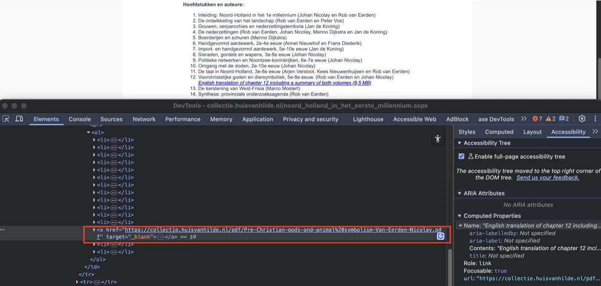
Tekst die eruitziet als een opsomming, moet ook zo in de code worden gemarkeerd. Je gebruikt voor lijsten en opsommingen de HTML-elementen `ol` (lijst met cijfers) of `ul` (lijst met bullets). Meestal is hier een knop voor in de content-editor van een CMS. Hulpsoftware weet dan hoe de tekst is gestructureerd. Bovendien kondigen schermlezers dan het aantal items in de lijst aan, voordat ze die gaan voorlezen. Zo weet een blinde bezoeker hoeveel informatie er nog komt. Meer over lijsten en waarom ze belangrijk zijn lees je op deze pagina https://properaccess.nl/waarom-correcte-html-lijsten-het-verschil-maken-in-toegankelijkheid/.
#### Oplossing:
Zorg dat alle opsommingen op de juiste manier in de code zijn gemarkeerd.
### Taalwisseling ontbreekt op anderstalige content
Impact: MediumType: Content WCAG: 3.1.2
Op deze pagina staat onder "Hoofdstukken en auteurs" een zin in een andere taal zonder taalcode: “English translation of chapter 12 including a summary of both volumes (8,5 MB)”.
Deze tekst wordt nu voorgelezen volgens de uitspraakregels van de primaire taal van de pagina. Die is ingesteld in het lang-attribuut op het html-element, in dit geval op “nl”. De schermlezer zou juist op de taal van de zin moeten overschakelen. Dat bereik je door deze anderstalige inhoud een lokaal lang-attribuut te geven met de juiste waarde.
Oplossing:
Voeg een lang-attribuut met de juiste taalcode toe aan het html-element dat de tekst in een andere taal bevat. Als de tekst bijvoorbeeld in het Engels is, voeg je lang="en" toe aan het element.
Op deze pagina zijn de teksten "Open Data" en "API en OAI-PMH" niet gemarkeerd als koppen.
Oplossing:
Dit voorkom je door koppen altijd te markeren met het juiste HTML-element, op het juiste kopniveau: h1, h2, h3, h4, h5 of h6. Meestal kun je het kopniveau kiezen via de content-editor in je CMS. De HTML-code voor de kop wordt dan automatisch toegepast.
In het PDF-document staan afbeeldingen. Alle afbeeldingen hebben geen tekstalternatieven (alt-tekst).
Afbeeldingen die met de Figure-tag zijn geplaatst, moeten altijd een beschrijving (alt-tekst) hebben. De Figure-tag is alleen bedoeld voor informatieve afbeeldingen. Schermlezers lezen de alt-tekst voor, zodat blinde bezoekers ook alle informatie tot zich kunnen nemen. Omdat de alternatieve tekst nu ontbreekt, lezen schermlezers alleen “afbeelding” voor. Blinde bezoekers kunnen hierdoor het gevoel krijgen dat ze inhoud missen.
Oplossing:
Voeg tekstalternatieven toe aan deze afbeeldingen als ze informatief zijn. Markeer deze afbeeldingen als artefacten zodat ze verborgen worden voor schermlezers als ze decoratief zijn.
#59 - Tabelgegevenscellen zijn gemarkeerd als tabelkoppen
Impact: MediumType: Content WCAG: 1.3.1
In het PDF-document op pagina 5 is de inhoudsopgave ("Inhoud") een tabel met gegevens. De juiste markering ontbreekt. Zo is de cel met de tekst "57" een datacel, maar deze is verkeerd gemarkeerd met TH.
Bij een datatabel moet je speciale tags toevoegen voor de tabelkoppen. Dan begrijpen schermlezers de relatie tussen de kop en onderliggende datacellen.
Oplossing:
Markeer de cellen in de koprij van de tabel met TH-tags en de datacellen met TD-tags.
#60 - Leesvolgorde van de tags is niet logisch
Impact: MediumType: Content WCAG: 1.3.2
In het PDF-document is de leesvolgorde niet logisch. Op pagina 11 staat onder de afbeelding een tekst die begint met: “Baksteenvloer van een souterrainkelder …”. In de tags is deze tekst niet na de bijbehorende afbeelding geplaatst en wordt de alinea onderbroken die begint met: “Op geringe diepte werden onder de bestrating…”.
Schermlezers lezen een pdf-document in de volgorde van de tags die in de codelaag staan. Als die niet logisch is, is de leesvolgorde dat dus ook niet en wordt het voor een blinde bezoeker moeilijk om de inhoud van het document te begrijpen.
Oplossing:
Zorg dat de volgorde van de tags logisch is.
#61 - De alinea met tekst is onjuist gemarkeerd als een tabel
Impact: MediumType: Content WCAG: 1.3.1
In het PDF-document op pagina 19 is de blauwe tekst die begint met: “De haard met maalsteenfundering…” gemarkeerd als een tabel met TH-tags en TD-tags. Dit gebeurt ook op andere pagina’s.
Oplossing:
Zorg ervoor dat de tekst correct is gemarkeerd met p-tags.
#62 - Lijst is niet als lijst gemarkeerd
Impact: MediumType: Content WCAG: 1.3.1
In het PDF-document op pagina 202 staat een lijst met 14 items.
De juiste markering ontbreekt. Dit probleem komt ook voor op pagina 218.
Inhoud die eruitziet als een lijst, moet ook in de tags zo zijn gemarkeerd. Zo krijgen blinde bezoekers dezelfde informatiestructuur door als ziende bezoekers. Een ander voordeel van het markeren van een lijst is dat schermlezers het aantal items dan aankondigen voordat ze gaan voorlezen.
Oplossing:
Markeer de lijst met een L- en Li-tags.
#63 - Kleurcontrast van kleine tekst is te laag
Impact: MediumType: Content WCAG: 1.4.3
In het PDF-document staat rode tekst op een gele achtergrond. De contrastratio is te laag: 3,2:1. Dit is te zien op pagina’s 2 en 218.
Op pagina’s 5, 7, 8 en andere staat blauwe tekst op een witte achtergrond. De contrastratio is te laag: 2,8:1.
Oplossing:
Zorg dat het contrast minimaal 4,5:1 is.
#64 - Kleurcontrast van grote tekst is te laag
Impact: MediumType: Content WCAG: 1.4.3
In het PDF-document staat witte tekst op een gele achtergrond. De contrastratio is te laag: 1,6:1. Dit is te zien op pagina’s 156, 174 en 208.
Oplossing:
Omdat het hier om grote tekst gaat, moet de contrastverhouding minimaal 3,0:1 zijn.
Link naar pagina: https://collectie.huisvanhilde.nl/publicaties.aspx
Link naar PDF: PDF2
#65 - PDF-document heeft geen titel
Impact: MediumType: Content WCAG: 2.4.2
In het PDF-document is geen titel ingesteld in de bestandseigenschappen.
Zelfs als er een titel op de eerste pagina staat, moet je in de PDF-instellingen ook een documenttitel instellen. Als je een pdf opent in een pdf-lezer (zoals Adobe Acrobat of een browser), zie je de bestandsnaam meestal bovenaan in de titelbalk, bijvoorbeeld document123.pdf. Maar als je een documenttitel in de pdf-metadata instelt, dan wordt die titel in plaats van de bestandsnaam getoond. Dit maakt het document toegankelijker voor bezoekers met verschillende beperkingen. Zij kunnen dan snel en gemakkelijk zien of het document relevant is.
Los het op in Adobe Acrobat:
Open het pdf-document in Adobe Acrobat.
Ga naar Bestand > Eigenschappen.
Ga naar het tabblad Beschrijving.
Vul in het veld Titel een beschrijvende titel in, bijvoorbeeld:
"Rapport: Bevolkingscijfers 2023".
Klik op OK en sla het bestand op.
#66 - Afbeeldingen hebben geen alt-tekst
Impact: MediumType: Content WCAG: 1.1.1
In het PDF-document staan afbeeldingen. Alle afbeeldingen hebben geen tekstalternatieven (alt-tekst).
Afbeeldingen die met de Figure-tag zijn geplaatst, moeten altijd een beschrijving (alt-tekst) hebben. De Figure-tag is alleen bedoeld voor informatieve afbeeldingen. Schermlezers lezen de alt-tekst voor, zodat blinde bezoekers ook alle informatie tot zich kunnen nemen. Omdat de alternatieve tekst nu ontbreekt, lezen schermlezers alleen “afbeelding” voor. Blinde bezoekers kunnen hierdoor het gevoel krijgen dat ze inhoud missen.
Oplossing:
Voeg tekstalternatieven toe aan deze afbeeldingen als ze informatief zijn. Markeer deze afbeeldingen als artefacten zodat ze verborgen worden voor schermlezers als ze decoratief zijn.
#67 - Koppen zijn niet als kop gemarkeerd
Impact: MediumType: Content WCAG: 1.3.1
In het PDF-document staan verschillende koppen die niet gemarkeerd zijn als koppen. Dit is bijvoorbeeld te zien bij “Vondsten met een verhaal”, “Een houten constructie”, “Wat is archeologie?” en andere.
Op deze manier verschilt de visuele informatiestructuur van de structuur van het document in de tags.
Oplossing:
Vervang de P-tag door de H-tag, zodat de tag-structuur gelijk is aan de visuele structuur.
#68 - Leesvolgorde van de tags is niet logisch
Impact: MediumType: Content WCAG: 1.3.2
In het PDF-document is de leesvolgorde niet logisch. Op pagina 18 staat een schema. In de tags is deze informatie geplaatst na de alinea die begint met: “Maar één ding is zeker: zover onderzoekers nu weten …” en die op pagina 23 staat.
Schermlezers lezen een pdf-document in de volgorde van de tags die in de codelaag staan. Als die niet logisch is, is de leesvolgorde dat dus ook niet en wordt het voor een blinde bezoeker moeilijk om de inhoud van het document te begrijpen.
Oplossing:
Zorg dat de volgorde van de tags logisch is.
#69 - Kleurcontrast van grote tekst is te laag
Impact: MediumType: Content WCAG: 1.4.3
In het PDF-document staat op pagina 4 en 15 rode tekst (#EB1F2F) op een blauwe achtergrond (#86C0D6). De contrastratio is te laag: 2,2:1.
Oplossing:
Omdat het hier om grote tekst gaat, moet de contrastverhouding minimaal 3,0:1 zijn.
#70 - Kleurcontrast van kleine tekst is te laag
Impact: MediumType: Content WCAG: 1.4.3
In het PDF-document staat op pagina 18 in het schema witte tekst op een rode achtergrond. De contrastratio is te laag: 3,1:1. De rode tekst op de lichtrode achtergrond heeft een contrastratio van 2,3:1.
Op deze pagina staan twee iframes zonder een title-attribuut.
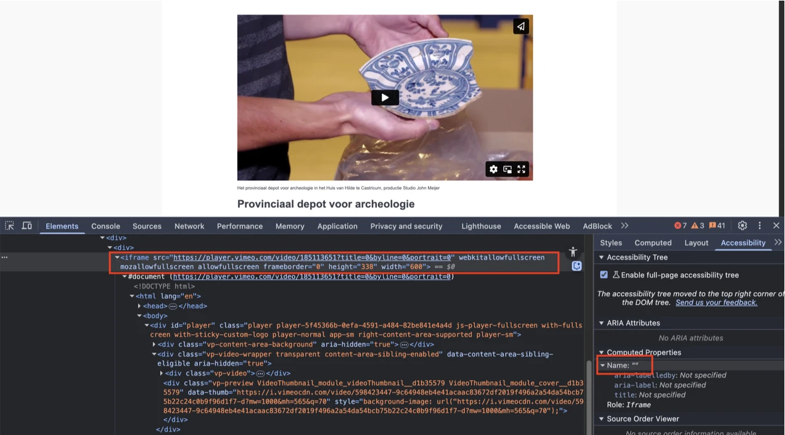
Iframes moeten een goede beschrijving hebben. Die staat meestal in het `title`-attribuut van het iframe. Er moet in staan welk *type* inhoud het is (bijvoorbeeld een podcast of video), en waar het inhoudelijk over gaat. Deze beschrijving van de inhoud moet uniek en betekenisvol zijn. Door de beschrijving kunnen bezoekers met hulpsoftware beslissen of het de moeite waard is om de inhoud van het iframe te verkennen.
#### Oplossing:
Voeg het `title`-attribuut aan het `iframe`-element toe, en zet daar een tekst in waaruit blijkt welk *type* inhoud het iframe bevat, en waar het inhoudelijk over gaat.
### `strong`-element in plaats van kop-element
Impact: MediumType: ContentWCAG: 1.3.1
Op deze pagina is de tekst "Provinciaal depot voor archeologie" onjuist gemarkeerd met een strong-element in plaats van met een correct kopniveau.
Het strong-element is niet bedoeld om koppen mee te markeren. Je moet dat altijd doen met een kop-element, zoals h2. Koppen gebruik je om een tekst te structureren. Alleen als je ze als kop markeert met een kop-element, begrijpt hulpsoftware die betekenis. Het strong-element gebruik je wel als je nadruk wilt geven aan enkele woorden of een zinsdeel.
Oplossing:
Verwijder het strong-element en gebruik de juiste kop-elementen om deze koppen te markeren, zoals h1.
#72 - Kop is niet gemarkeerd als koptekst
Impact: MediumType: ContnetWCAG: 1.3.1
Op deze pagina zijn de teksten "Organisatie en wetgeving", "Bezoekuren", "Bezoekadres" en andere vergelijkbare teksten niet gemarkeerd als koppen.
Oplossing:
Dit voorkom je door koppen altijd te markeren met het juiste HTML-element, op het juiste kopniveau: h2, h3, h4, h5 of h6. Meestal kun je het kopniveau kiezen via de content-editor in je CMS. De HTML-code voor de kop wordt dan automatisch toegepast.
#73 - Video heeft geen ondertiteling
Impact: MediumType: Content WCAG: 1.2.2
Op deze pagina staat een video met gesproken tekst, maar ondertitels ontbreken.
Ondertitels zijn essentieel voor bezoekers die doof of slechthorend zijn om toegang te krijgen tot alle inhoud van de video.
Oplossing:
Voeg ondertiteling toe aan de video.
#74 - Video bevat tekst of logo’s waarvoor geen alternatief is
Impact: MediumType: ContentWCAG: 1.2.3, 1.2.5
Op deze pagina bevat de video op meerdere momenten tekst en logo’s. Daarnaast toont de video personen en gebeurtenissen die betekenisvolle visuele informatie overbrengen. Er is echter geen media-alternatief of audiodescriptie beschikbaar. Deze visuele informatie is daardoor niet toegankelijk voor blinde bezoekers. Er moet een audiodescriptie worden aangeboden die belangrijke visuele inhoud (zoals handelingen, personen en scènes) beschrijft, gesynchroniseerd met de video. Een andere mogelijke oplossing is een tekstalternatief (zoals een transcript) dat de betekenisvolle visuele informatie in de video volledig beschrijft.
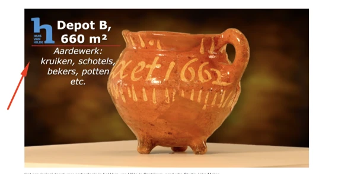
Voeg een audiobeschrijving toe aan de video. Een media-alternatief is onder 1.2.5 niet meer toegestaan als oplossing. Dit is van belang voor mensen die de video’s niet (goed) kunnen zien.
Op deze pagina zijn de teksten "Noord-Hollandse archeologische publicaties" en "Brochures" niet gemarkeerd als koppen.
Oplossing:
Dit voorkom je door koppen altijd te markeren met het juiste HTML-element, op het juiste kopniveau: h1, h2, h3, h4, h5 of h6. Meestal kun je het kopniveau kiezen via de content-editor in je CMS. De HTML-code voor de kop wordt dan automatisch toegepast.
#76 - Relatie tussen links in een groep is niet in HTML vastgelegd
Impact: MediumType: ContentWCAG: 1.3.1
Op deze pagina staat onder "Brochures" een groep links die visueel als een groep wordt gepresenteerd, maar deze groepering is niet gedefinieerd in de HTML-structuur.
Oplossing:
Neem de elementen op in een ul- of nav-element.
#77 - Link heeft geen toegankelijke naam
Impact: GrootType: TechniekWCAG: 4.1.2, 2.4.4
Op deze pagina ontbreken onder "Brochures" bij meerdere links de toegankelijke namen. Zo staat er na de link “Doggerland” een link zonder naam, gevolgd door de link “Twee werelden in een wrak” en daarna nog twee links zonder namen.
Hierdoor begrijpen bezoekers die een schermlezer gebruiken niet wat de bestemming of de functie is van de link.
Oplossing:
Voorzie deze link van een toegankelijke naam, door gebruik te maken van een beschrijvende linktekst, een aria-label of een andere geschikte techniek.
#78 - Onzichtbaar element krijgt toetsenbordfocus
Impact: GrootType: TechniekWCAG: 2.4.3
Op deze pagina komt de toetsenbordfocus terecht op meerdere onzichtbare interactieve elementen. Dit gebeurt bijvoorbeeld na de links “Doggerland”, “Twee werelden in een wrak”, “Het Oer-IJ heropend” en andere soortgelijke links.
De toetsenbordfocus mag niet terechtkomen op onzichtbare interactieve elementen (links, knoppen, formuliervelden). Als dat wel gebeurt, kan een bezoeker ze onbedoeld activeren.
Oplossing:
Zorg dat alleen elementen die zichtbaar zijn toetsenbordfocus kunnen krijgen en dat de focusvolgorde logisch is.
#79 - Er zijn links met dezelfde tekst maar een andere bestemming
Impact: GrootType: TechniekWCAG: 2.4.4
Op deze pagina staan onder "Brochures" twee links met dezelfde toegankelijke naam: "Wonen aan het Witsmeer", maar de bestemmingen van deze links zijn verschillend.
Er zijn dus meerdere links aanwezig op deze pagina met dezelfde toegankelijke naam, maar een verschillend linkdoel. Dit kan verwarrend zijn voor bezoekers.
Oplossing:
Zorg dat links met dezelfde toegankelijke naam ook naar dezelfde bestemming leiden. Als het om een andere bestemming gaat, moet de toegankelijke naam ook anders zijn.
Op deze pagina is de tekst "Zoeken in het depot" onjuist gemarkeerd met een strong-element in plaats van met een correct kopniveau.
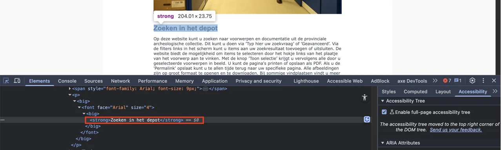
Het `strong`-element is niet bedoeld om koppen mee te markeren. Je moet dat altijd doen met een kop-element, zoals `h2`. Koppen gebruik je om een tekst te structureren. Alleen als je ze als kop markeert met een kop-element, begrijpt hulpsoftware die betekenis. Het `strong`-element gebruik je wel als je nadruk wilt geven aan enkele woorden of een zinsdeel.
#### Oplossing:
Verwijder het `strong`-element en gebruik de juiste kop-elementen om deze koppen te markeren, zoals `h1`.
### Kop is niet gemarkeerd als koptekst
Impact: MediumType: ContentWCAG: 1.3.1
Op deze pagina zijn de teksten "De juiste zoekterm", "Filters", "Zoeken met *" en andere vergelijkbare teksten niet gemarkeerd als koppen.
Oplossing:
Dit voorkom je door koppen altijd te markeren met het juiste HTML-element, op het juiste kopniveau: h1, h2, h3, h4, h5 of h6.
Link naar pagina: Zoekresultaat
Op deze pagina opent de knop “Geavanceerd” een dialoogvenster. De problemen met dit dialoogvenster zijn gelijk aan de eerder beschreven punten in de sectie met betrekking tot het dialoogvenster op de Homepagina.
#80 - Keuzevakjes hebben niet de juiste rol
Impact: MediumType: TechniekWCAG: 4.1.2
Op deze pagina staan onder “Deelcollecties” keuzevakjes, maar de juiste checkbox-rol ontbreekt.
Daarnaast is in de code niet gedefinieerd of de keuzevakjes zijn geselecteerd of niet. Voor bezoekers die de pagina kunnen zien, is het duidelijk of een vakje is aangevinkt, maar voor blinde of slechtziende bezoekers die een schermlezer gebruiken, is dit niet waarneembaar.
Dezelfde problemen doen zich voor bij andere keuzevakjes op deze pagina, onder “Filteren op:” en “selectie:”.
Hierdoor ziet een schermlezer niet dat het keuzevakjes (checkboxes) zijn, en krijgt een blinde bezoeker deze informatie dus niet door. De bezoeker weet dan niet hoe hij deze elementen kan gebruiken.
Oplossing:
Gebruik het standaard HTML-element <input type="checkbox">. De geselecteerde toestand wordt dan automatisch beschikbaar gesteld aan hulpsoftware. Kan dit echt niet? Geef de keuzevakjes dan de juiste rol door role="checkbox" toe te voegen. Voeg ook het attribuut aria-checked toe om aan te geven of de keuzevakjes zijn geselecteerd of niet.
#81 - Interactieve elementen hebben niet de juiste rol
Impact: MediumType: TechniekWCAG: 4.1.2
Op deze pagina ontbreken bij meerdere interactieve elementen de juiste toegankelijke rollen. Het gaat om elementen met de teksten “Toon alle waarden” en “Toon meer” in de filters in de zijbalk, met de teksten “Vind” en “Geavanceerd”, het interactieve element met het “X”-icoon naast de tekst “Periode: paleolithicum of mesolithicum of neolithicum of bronstijd of ijzertijd”, interactieve elementen in de zoekresultaten, elementen in het dialoogvenster dat wordt geopend via de interactieve elementen met de tekst “Toon alle waarden” in de filters in de zijbalk, en andere soortgelijke elementen.
Oplossing:
Zorg ervoor dat alle interactieve elementen de juiste rol hebben.
#82 - Invoerveld is niet met het toetsenbord te bedienen
Impact: MediumType: TechniekWCAG: 2.1.1
Op deze pagina zijn meerdere interactieve elementen niet toegankelijk met het toetsenbord. Het gaat om keuzevakjes en interactieve elementen met de teksten “Toon alle waarden” en “Toon meer” in de filters in de zijbalk, interactieve elementen met de teksten “Vind” en “Geavanceerd”, het interactieve element met het “X”-icoon naast de tekst “Periode: paleolithicum of mesolithicum of neolithicum of bronstijd of ijzertijd”, en andere soortgelijke elementen.
Oplossing:
Zorg dat alle interactieve elementen met het toetsenbord kunnen worden bediend.
#83 - De relatie tussen selectievakjes is niet in de code vastgelegd
Impact: MediumType: Techniek WCAG: 1.3.1
Op deze pagina zijn groepen keuzevakjes aanwezig, voorafgegaan door de tekst "Deelcollecties". Hoewel deze visueel gegroepeerd zijn, is deze relatie niet gedefinieerd in de HTML.
Visueel vormen deze elementen een groep, maar die relatie is niet vastgelegd in de code.
Oplossing:
Je lost dit op door de elementen in een fieldset-element te plaatsen. Een fieldset met interactieve inhoud moet een naam hebben. Hiervoor kun je het legend-element gebruiken. Plaats hierin de tekst “Deelcollecties”.
#84 - Groepslabel is niet gekoppeld aan de groep met keuzevakjes
Impact: MediumType: Techniek WCAG: 1.3.1
Op deze pagina bevat de zijbalk met filters een groeplabel “Filteren op:” dat niet is gekoppeld aan de bijbehorende groep keuzevakjes. Hetzelfde probleem doet zich voor bij het groeplabel “selectie:”.
Hierdoor ziet de schermlezer niet dat er een relatie is tussen het groepslabel en de keuzevakjes (checkboxes). De individuele labels van elk keuzevakje worden voorgelezen zonder het groepslabel.
Oplossing:
Gebruik fieldset- en legend-elementen. Andere oplossingen zijn ook mogelijk.
#85 - Secties met verborgen inhoud hebben niet de juiste rollen en attributen
Impact: MediumType: Techniek WCAG: 4.1.2
Op deze pagina bevat de zijbalk met filters secties met inhoud die geopend of verborgen kan worden, zogenaamde accordeons. Zie bijvoorbeeld “Materiaalcategorie”. De juiste rollen en vereiste attributen ontbreken.
Oplossing:
Je kunt een ARIA-oplossing speciaal voor accordeons gebruiken. Zie de pagina https://www.w3.org/WAI/ARIA/apg/patterns/accordion/examples/accordion voor meer informatie. Andere oplossingen zijn ook mogelijk.
#86 - De koppen van de accordion staan binnen de knop-elementen
Impact: MediumType: Techniek WCAG: 1.3.1
Op deze pagina bevat de zijbalk met filters accordeons. In een sectie met verborgen inhoud missen de elementen die deze inhoud openen en sluiten de rol van kop.
Oplossing:
Gebruik een h-element met daarbinnen een button-element. De volgorde is dan bijvoorbeeld <h2><button>Titel van de sectie</button></h2>.
#87 - Het is niet in code vastgelegd of secties van de accordeon open of dicht zijn
Impact: MediumType: Techniek WCAG: 1.1.1, 4.1.2
Op deze pagina zijn in de filters in de zijbalk secties met verborgen inhoud aanwezig. De pijliconen die de aanwezigheid van de verborgen inhoud aangeven, zijn geïmplementeerd als img-elementen zonder alt-attribuut. Deze afbeeldingen hebben daardoor geen tekstalternatief.
Daardoor weten schermlezers niet dat hier verborgen content aanwezig is. Deze informatie is niet aanwezig in de vorm van een aria-expanded-attribuut of een verborgen tekst.
Oplossing:
Je kunt bijvoorbeeld het volgende doen:
geef het pijltje een tekstalternatief
voeg verborgen tekst toe die verandert als accordeon opent of sluit gebruik een aria-expanded-attribuut
#88 - Kleurcontrast van tekst is te laag (tekst kleiner dan 24px en niet vetgedrukt)
Impact: MediumType: Content WCAG: 1.4.3
Op deze pagina staat in de secties van de filters in de zijbalk blauwe tekst (#2891E1) op een grijze achtergrond (#D9DADE). In de sectie “Materiaalcategorie” betreft dit bijvoorbeeld de tekst “Toon alle waarden (7)”. De contrastratio is te laag en bedraagt 2,4:1.
Oplossing:
Deze tekst is kleiner dan 24px en niet vetgedrukt, daarom moet het contrast minimaal 4,5:1 zijn. Op deze pagina staat een instructie die uitlegt hoe je kleurcontrast kan testen: https://properaccess.nl/hoe-test-ik-kleurcontrast/.
#89 - Interactieve elementen met dezelfde tekst hebben een andere functie
Impact: MediumType: TechniekWCAG: 2.4.6
Op deze pagina staan in de filters in de zijbalk meerdere interactieve elementen met dezelfde zichtbare tekst: "Toon alle waarden" en “Toon meer”/”Toon minder”. Deze interactieve elementen voeren echter verschillende functies uit.
Je kunt met deze interactieve elementen een andere actie uitvoeren. Dit kan verwarrend zijn voor bezoekers met een schermlezer. Het is niet duidelijk welke actie elke interactieve element uitvoert.
Oplossing:
Zorg dat de tekst past bij de actie van de interactieve elementen, zodat interactieve elementen met verschillende functies ook verschillende teksten hebben.
#90 - Kleurcontrast van tekst is te laag (tekst kleiner dan 19px)
Impact: MediumType: Content WCAG: 1.4.3
Op deze pagina staat grijze tekst (#9B9EA3) met de tekst “Zoekresultaat” op een witte achtergrond. De contrastratio is te laag en bedraagt 2,7:1.
Oplossing:
Deze tekst is kleiner dan 19px en vetgedrukt, daarom moet het contrast met de achtergrondkleur minimaal 4,5:1 zijn. Op deze pagina staat een instructie die uitlegt hoe je kleurcontrast kan testen: https://properaccess.nl/hoe-test-ik-kleurcontrast/.
#91 - Kop is niet gemarkeerd als koptekst
Impact: MediumType: Content WCAG: 1.3.1
Op deze pagina zijn de teksten "Zoekresultaat" en “Selecteer zoekwaarde(n)” in het dialoogvenster dat wordt geopend via de interactieve elementen met de tekst “Toon alle waarden” in de filters in de zijbalk niet gemarkeerd als koppen. Ook de tekst “Reageer” in het dialoogvenster dat wordt geopend via de knop met het label "Reageer", die verschijnt wanneer de bezoeker overschakelt naar de weergave “Record”, is niet gemarkeerd als kop.
Oplossing:
Dit voorkom je door koppen altijd te markeren met het juiste HTML-element, op het juiste kopniveau: h1, h2, h3, h4, h5 of h6. Meestal kun je het kopniveau kiezen via de content-editor in je CMS. De HTML-code voor de kop wordt dan automatisch toegepast.
Op deze pagina staat onder “Zoekresultaat” een keuzelijst (select-element) met het label “Sorteer op:”. De toegankelijke naam ontbreekt. Dit probleem voldoet ook niet aan succescriterium 2.5.3, omdat bezoekers die spraaksoftware gebruiken dit element niet kunnen bedienen.
Hierdoor is de keuzelijst niet toegankelijk.
Oplossing:
Geef het select-element een toegankelijke naam. Zorg dat de toegankelijke naam de zichtbare tekst bevat, en zet deze tekst het liefst vooraan in de naam. De toegankelijke naam mag ook precies hetzelfde zijn als de zichtbare tekst.
#93 - Toestand van de schakelknop is niet vastgelegd in de code
Impact: MediumType: TechniekWCAG: 4.1.2
Op deze pagina hebben de knoppen “Kaart”, “Lijst”, “Lijst” en “Record” meerdere toestanden (bijvoorbeeld ingedrukt of niet ingedrukt), maar er is geen programmatische aanduiding van de huidige toestand.
Hierdoor kan hulpsoftware deze informatie niet doorgeven. Blinde bezoekers weten daardoor niet wat de toestand is van de knop.
Oplossing:
Zorg dat de toestand van de knop ook in de code wordt weergegeven.
#94 - Taalwisseling ontbreekt op anderstalige content
Impact: MediumType: ContentWCAG: 3.1.2
Op deze pagina staan onder “Sorteer op” knoppen met toegankelijke namen in een andere taal zonder taalcode: “Start button”, “Previous button”, “Next button” en “End button”.
Oplossing:
Voeg een lang-attribuut met de juiste taalcode toe aan het html-element dat de tekst in een andere taal bevat. Als de tekst bijvoorbeeld in het Engels is, voeg je lang="en" toe aan het element.
#95 - Naam van de knop beschrijft niet wat de knop doet
Impact: MediumType: TechniekWCAG: 2.4.6
Op deze pagina hebben de knoppen om tussen de pagina’s met zoekresultaten te schakelen toegankelijke namen die de functie niet nauwkeurig beschrijven, zoals “Start button”. Daarnaast zijn er knoppen met dezelfde tekst, zoals “Previous button” en “Next button”.
Een blinde bezoeker weet daardoor niet wat deze knoppen precies doen.
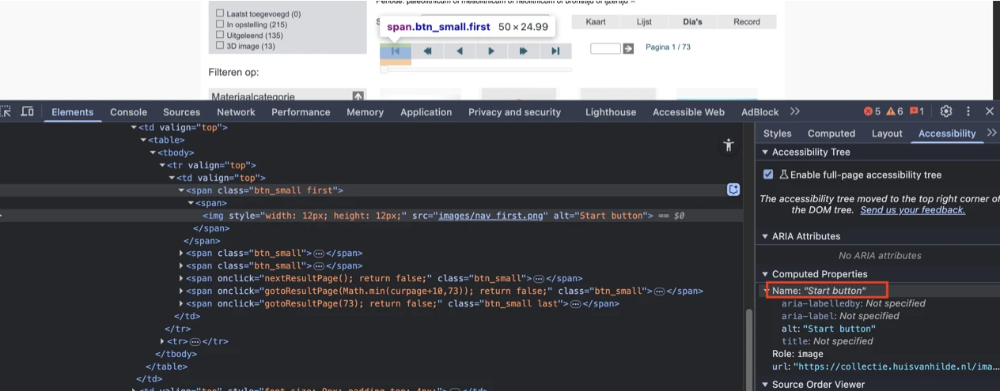
#### Oplossing:
Voeg tekst toe die deze knoppen goed beschrijven.
### Interactieve elementen hebben niet de juiste rol
Impact: MediumType: TechniekWCAG: 4.1.2
Op deze pagina is een schuifregelaar aanwezig om tussen de zoekresultatenpagina’s te schakelen. Deze schuifregelaar mist de juiste rol en heeft geen toegankelijke naam.
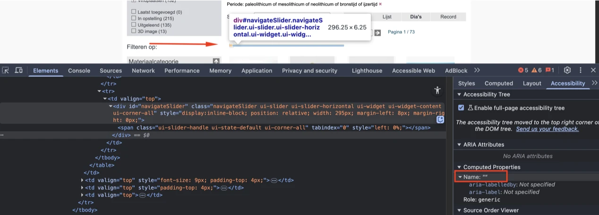
#### Oplossing:
Zorg ervoor dat alle interactieve elementen de juiste rol hebben.
### Het paginanummer verandert, maar wordt niet aangekondigd door een schermlezer
Impact: MediumType: TechniekWCAG: 4.1.3
Op deze pagina verandert het paginanummer, bijvoorbeeld van “Pagina 1 / 73” naar “Pagina 2 / 73”, wanneer een bezoeker navigatieknoppen of de schuifregelaar gebruikt om naar andere zoekresultatenpagina’s te gaan. Deze wijziging is een statusmelding. Hoewel de informatie dynamisch wordt bijgewerkt, wordt deze niet doorgegeven aan schermlezers.
Statusberichten moeten automatisch voorgelezen worden door schermlezers zodra ze verschijnen of veranderen, maar de code die dit mogelijk maakt is nog niet toegevoegd.
Oplossing:
Voeg bijvoorbeeld aria-live="polite" toe aan de container met de tekst. Deze code moet al aanwezig zijn op het moment dat de pagina wordt geladen. Andere oplossingen zijn ook mogelijk.
#96 - De elementen van de schuifregelaar hebben een te lage contrastratio
Impact: MediumType: TechniekWCAG: 1.4.11
Op deze pagina is een schuifregelaar aanwezig om tussen de zoekresultatenpagina’s te schakelen. De elementen van de schuifregelaar hebben een onvoldoende kleurcontrast ten opzichte van de achtergrond. De grijze voortgangsbalk (#DDDDDD) op de witte achtergrond heeft een contrastratio van 1,4:1. De grijze schuifknop (#CCCCCC) op de witte achtergrond heeft een contrastratio van 1,6:1.
Oplossing:
Zorg voor een minimaal contrast van 3,0:1.
#97 - Invoerveld heeft geen toegankelijke naam
Impact: MediumType: TechniekWCAG: 4.1.2
Op deze pagina ontbreekt bij het invoerveld waarmee bezoekers een specifiek paginanummer kunnen invoeren om te navigeren een toegankelijke naam. Hetzelfde probleem doet zich voor bij het invoerveld in het dialoogvenster dat wordt geopend via de interactieve elementen met de tekst “Toon alle waarden” in de filters in de zijbalk. Dit betreft het veld naast de tekst: “Toon waardes met zoekterm”.
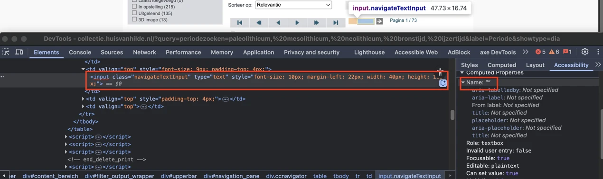
Hierdoor is het voor blinde of slechtziende bezoekers die een schermlezer gebruiken niet duidelijk wat zij in moeten vullen.
#### Oplossing:
Dit los je op door het invoerveld een toegankelijke naam te geven, bijvoorbeeld door een `label`-element aan het veld te koppelen.
### Er ontbreekt een label bij een invoerveld
Impact: MediumType: TechniekWCAG: 3.3.2
Op deze pagina heeft het invoerveld waarmee bezoekers een specifiek paginanummer kunnen invoeren om te navigeren geen blijvend zichtbaar label.
Oplossing:
Geef dit input-veld een duidelijk label in de vorm van tekst of een afbeelding met een alt-tekst.
strong-element is gebruikt voor opmaak
Impact: MediumType: ContentWCAG: 1.3.1
Op deze pagina wordt het strong-element onjuist gebruikt voor opmaakdoeleinden in de zoekresultaten. De tekst “Nummer” is in een strong-element geplaatst om deze vet te maken. Hetzelfde probleem doet zich voor bij het selecteren van de weergaven “Lijst” en “Record”, bij teksten zoals “Jaar onderzoek”, “Onderzoek”, “Gerelateerde personen en instellingen” en andere vergelijkbare teksten.
Het strong-element heeft een semantische waarde: het geeft een bepaalde betekenis aan de tekst die erin staat. Dit element geeft aan dat de tekst extra nadruk moet krijgen. Om die reden mag dit element niet gebruikt worden om alleen een visueel effect te bereiken (vetgedrukte tekst).
Oplossing:
Verwijder de onnodige strong-elementen en gebruik CSS om de tekst vet te maken.
#98 - Meerdere afbeeldingen met hetzelfde tekstalternatief
Impact: MediumType: ContentWCAG: 1.1.1
Op deze pagina staan in de zoekresultaten meerdere afbeeldingen die zijn geïmplementeerd met een img-element en dezelfde alt-tekst “picture” hebben. Deze herhaling zorgt voor dubbele aankondigingen voor schermlezers, wat verwarrend kan zijn.
Een vergelijkbaar probleem doet zich voor wanneer de bezoeker de weergave “Record” selecteert. Er zijn dan twee afbeeldingen met de alt-tekst “Zoom in”, twee afbeeldingen met de alt-tekst “Zoom out”, twee afbeeldingen met de alt-tekst “Go home” en twee afbeeldingen met de alt-tekst “Toggle full page”.
Oplossing:
Afbeeldingen die functioneren als links moeten een tekstalternatief hebben dat het doel van de link beschrijft. Op deze manier weten bezoekers die schermlezers gebruiken waar de link naartoe gaat.
#99 - Kleurcontrast van iconen is niet voldoende
Impact: MediumType: TechniekWCAG: 1.4.11
Op deze pagina heeft in het dialoogvenster dat wordt geopend via de interactieve elementen met de tekst “Toon alle waarden” in de filters in de zijbalk het oranje (#EC8E0C) “X”-icoon naast de tekst “Selecteer zoekwaarde(n)” een contrastratio van 2,4:1 tegen de lichtgrijze achtergrond (#F9F9F9).
Het kleurcontrast van iconen moet minimaal 3,0:1 zijn.
Oplossing:
Zorg dat de iconen voldoende contrast hebben.
#100 - Relatie tussen links in een groep is niet in HTML vastgelegd
Impact: MediumType: TechniekWCAG: 1.3.1
Op deze pagina bevindt zich in het dialoogvenster dat wordt geopend via de interactieve elementen met de tekst “Toon alle waarden” in de filters in de zijbalk een groep links die visueel als een groep wordt gepresenteerd, maar deze groepering is niet terug te zien in de HTML-structuur. Deze groep staat onder “Toon de termen beginnend met de letter”.
Oplossing:
Neem de elementen op in een ul- of nav-element.
#101 - Kleurcontrast van tekst is te laag (tekst kleiner dan 24px en niet vetgedrukt)
Impact: MediumType: ContentWCAG: 1.4.3
Op deze pagina staan in het dialoogvenster dat wordt geopend via de interactieve elementen met de tekst “Toon alle waarden” in de filters in de zijbalk links, zoals “A”, met paarse tekst (#7070C0) op een lichtgrijze achtergrond (#EEEEEE). De contrastratio is te laag en bedraagt 3,8:1.
Oplossing:
Deze tekst is kleiner dan 24px en niet vetgedrukt, daarom moet het contrast minimaal 4,5:1 zijn. Op deze pagina staat een instructie die uitlegt hoe je kleurcontrast kan testen: https://properaccess.nl/hoe-test-ik-kleurcontrast/.
#102 - Keuzevakjes hebben niet de juiste rol en hebben geen toegankelijke naam
Impact: MediumType: TechniekWCAG: 4.1.2
Op deze pagina verschijnen bij het selecteren van de weergave “Lijst” keuzevakjes naast elk zoekresultaat, maar de juiste checkbox-rol ontbreekt. Deze keuzevakjes hebben ook geen toegankelijke namen.
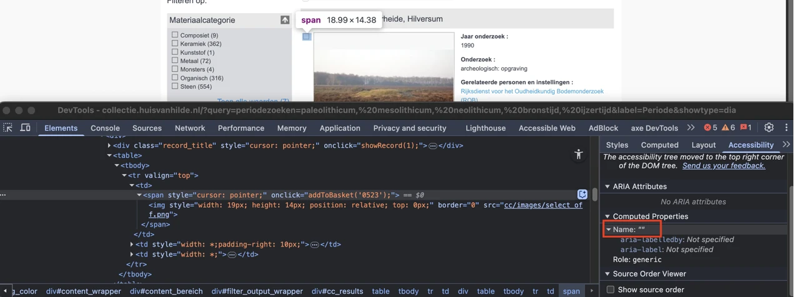
Daarnaast is in de code niet gedefinieerd of de keuzevakjes zijn geselecteerd of niet. Voor bezoekers die de pagina kunnen zien, is het duidelijk of een vakje is aangevinkt, maar voor blinde of slechtziende bezoekers die een schermlezer gebruiken, is dit niet waarneembaar.
Hierdoor ziet een schermlezer niet dat het keuzevakjes (checkboxes) zijn, en krijgt een blinde bezoeker deze informatie dus niet door. De bezoeker weet dan niet hoe hij deze elementen kan gebruiken.
#### Oplossing:
Gebruik het standaard HTML-element `<input type="checkbox">`. De geselecteerde toestand wordt dan automatisch beschikbaar gesteld aan hulpsoftware. Kan dit echt niet? Geef de keuzevakjes dan de juiste rol door role="checkbox" toe te voegen. Voeg ook het attribuut aria-checked toe om aan te geven of de keuzevakjes zijn geselecteerd of niet. Zorg daarnaast voor een beschrijvende toegankelijke naam.
### Kleurcontrast van tekst is te laag (tekst kleiner dan 24px en niet vetgedrukt)
Impact: MediumType: ContentWCAG: 1.4.3
Op deze pagina staat bij het selecteren van de weergave “Lijst” blauwe tekst (#58B3DD) op een witte achtergrond. Dit betreft bijvoorbeeld de tekst “Rijksdienst voor het Oudheidkundig Bodemonderzoek (ROB)”. De contrastratio is te laag en bedraagt 2,4:1.
Hetzelfde probleem doet zich voor bij teksten wanneer de weergave “Record” wordt geselecteerd.
Oplossing:
Deze tekst is kleiner dan 24px en niet vetgedrukt, daarom moet het contrast minimaal 4,5:1 zijn.
img-element heeft geen alt-attribuut
Impact: MediumType: ContentWCAG: 1.1.1
Op deze pagina worden bij het selecteren van de weergave “Record” meerdere afbeeldingen weergegeven met een img-element, maar zonder alt-attribuut.
Een img-element moet altijd een alt-attribuut hebben. Bij een decoratieve afbeelding die geen betekenis overdraagt, laat je dit attribuut leeg. Dan staat er alt="". Bij een informatieve afbeelding voeg je een duidelijke beschrijving van de afbeelding toe.
Oplossing:
Voeg het alt-attribuut toe aan het img-element. Bij een decoratieve afbeelding laat je de waarde leeg, bij een informatieve afbeelding voeg je een duidelijke alternatieve tekst toe.
#103 - Contrast van icoon op knop is te laag
Impact: MediumType: TechniekWCAG: 1.4.11
Op deze pagina worden bij het selecteren van de weergave “Record” in de carrousel interactieve elementen weergegeven met witte iconen op een grijze achtergrond ( #B1B1B1). De contrastratio is 2,1:1.
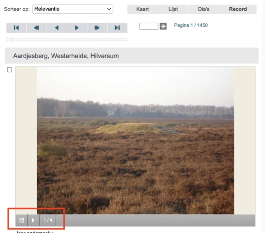
Binnen de carrousel hebben de pijliconen een te lage contrastratio ten opzichte van de achtergrond: 1,4:1.
#### Oplossing:
Zorg voor een minimaal contrast van 3,0:1.
### Link met een afbeelding, linkdoel is onbekend
Op deze pagina verschijnen bij het selecteren van de weergave “Record” meerdere links met PDF-iconen die geen toegankelijke namen hebben. Daardoor is de bestemming van deze links niet duidelijk.
Daardoor heeft de link geen inhoud en is het onduidelijk naar welke bestemming de link verwijst. Al deze punten zorgen voor afkeur op succescriteria 1.1.1 en 2.4.4. Dit leidt ook tot afkeur op succescriterium 4.1.2, omdat de link hierdoor geen toegankelijke naam heeft.
Oplossing:
Je lost dit op door de link te voorzien van toegankelijke, tekstuele inhoud. Dit kun je als volgt doen:
Verborgen tekst aan de link toevoegen: voeg beschrijvende tekst toe in het a-element, die je visueel verbergt met CSS (bijvoorbeeld met de class .sr-only).
aria-label gebruiken: voeg een aria-label-attribuut toe aan het a-element met een beknopte beschrijving van de bestemming van de link.
Combineren met aangrenzende tekst: je kunt de link semantisch koppelen aan bestaande tekst die erboven of eronder staat. Dit kan vaak met een kop-element of een lijststructuur.
#104 - Website werkt niet meer goed of is niet meer leesbaar als tekstafstand wordt aangepast
Impact: MediumType: TechniekWCAG: 1.4.12
Op deze pagina overlappen de teksten op de interactieve elementen in de filters in de zijbalk elkaar wanneer bezoekers tekstafstanden toepassen zoals beschreven in dit succescriterium.
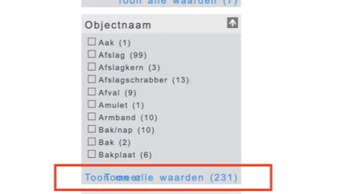
#### Oplossing:
Je lost dit op door de hoogte en breedte van de containers van de tekst responsief te maken.
### Dialoogvenster heeft niet de juiste rol en geen toegankelijke naam
Impact: MediumType: TechniekWCAG: 4.1.2
Op deze pagina opent een knop met het label "Reageer" een dialoogvenster. Deze knop verschijnt wanneer de bezoeker overschakelt naar de weergave “Record”. Het dialoogvenster heeft echter geen juiste ARIA-rol en geen toegankelijke naam.
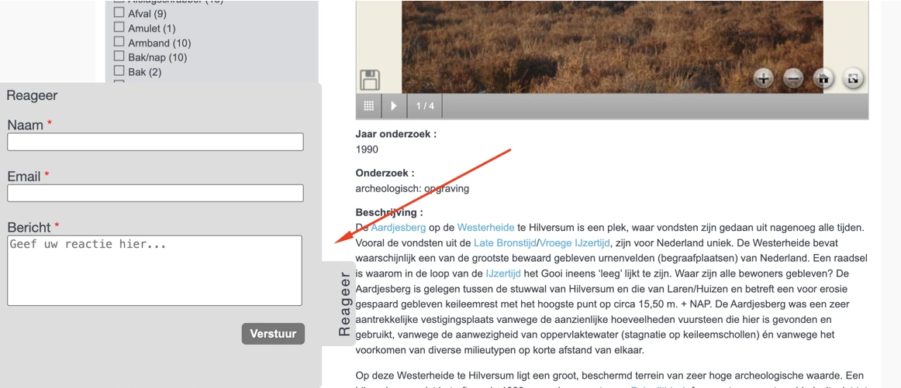
Schermlezers kunnen hierdoor niet doorgeven dat het om een dialoogvenster gaat, en wat de inhoud ervan is.
#### Oplossing:
Voeg twee attributen toe aan het dialoogvenster: een `aria-label` met een duidelijke beschrijving van de inhoud (`aria-label="Beschrijving van de inhoud"`) en `role="dialog"`.
### `label`-element is niet gekoppeld aan invoerveld
Op deze pagina opent een knop met het label "Reageer" een dialoogvenster. In dit dialoogvenster bevindt zich een formulier waarbij de label-elementen met de teksten "Naam" en “Email” niet expliciet zijn gekoppeld aan de bijbehorende invoervelden. Hierdoor hebben de invoervelden geen toegankelijke namen, wat niet voldoet aan succescriterium 4.1.2. Daarnaast voldoet dit ook niet aan succescriterium 2.5.3, omdat deze velden niet kunnen worden bediend met spraak.
Vergelijkbare problemen doen zich voor bij het veld “Bericht”. Het label “Bericht” is niet gekoppeld aan het bijbehorende tekstveld. De toegankelijke naam van dit veld is afkomstig van de plaatshoudertekst: “Geef uw reactie hier...”. Voor correcte werking van spraakbesturing moet de zichtbare tekst onderdeel zijn van de toegankelijke naam. Als de plaatshoudertekst verschilt van de toegankelijke naam, werken spraakcommando’s op basis van de zichtbare tekst niet.
label-elementen moeten gekoppeld zijn aan de bijbehorende invoervelden. Hierdoor krijgt het invoerveld een toegankelijke naam, en heeft het label een groter klikgebied. Dit maakt het formulier toegankelijker.
Oplossing:
Koppel de label-elementen aan hun bijbehorende invoervelden door het for attribuut op het label-element te gebruiken. In dit attribuut zet je het id van het invoerveld waar het label bij hoort. Zorg dat de toegankelijke naam de zichtbare tekst bevat, bij voorkeur aan het begin.
#105 - Contrast van icoon is te laag
Impact: MediumType: TechniekWCAG: 1.4.11
In het dialoogvenster dat wordt geopend via de knop “Reageer” staan rode asterisken (#FF0000) naast de veldlabels. Deze asterisken hebben een onvoldoende kleurcontrast ten opzichte van de grijze achtergrond (#DDDDDD). De contrastratio van 2,9:1 is te laag.
Oplossing:
Zorg voor een minimaal contrast van 3,0:1.
#106 - Kleurcontrast van tekst is te laag (tekst kleiner dan 24px en niet vetgedrukt)
Impact: MediumType: ContentWCAG: 1.4.3
In het dialoogvenster dat wordt geopend via de knop “Reageer” staat de witte knoptekst “Verstuur” op een grijze achtergrond (#777777). De contrastratio is te laag en bedraagt 4,4:1.
Oplossing:
Deze tekst is kleiner dan 24px en niet vetgedrukt, daarom moet het contrast minimaal 4,5:1 zijn. Op deze pagina staat een instructie die uitlegt hoe je kleurcontrast kan testen: https://properaccess.nl/hoe-test-ik-kleurcontrast/.
#107 - Voor de validatie is alleen HTML5-validatie gebruikt
Impact: MediumType: TechniekWCAG: 2.2.1, 3.3.1
In het dialoogvenster dat wordt geopend via de knop “Reageer” maakt het formulier uitsluitend gebruik van HTML5-validatie voor alle velden.
Deze foutmeldingen verdwijnen te snel. Er is dus tijdslimiet ingesteld.
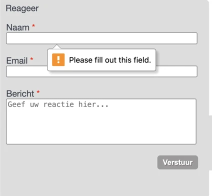
Deze foutmeldingen worden niet door alle browsers en schermlezers even goed ondersteund. Elke browser toont de meldingen anders, en niet altijd op een toegankelijke manier: de melding is soms kortaf en onvolledig.
#### Oplossing:
Voeg altijd zelf foutmeldingen toe aan het formulier. Controleer of er nog meer formulieren zijn die dit probleem hebben.
### Bezoekers die inzoomen tot 400% kunnen niet meer alle functies gebruiken
Impact: MediumType: TechniekWCAG: 1.4.10
Bij een schermresolutie van 1280 bij 1024 pixels en een zoomniveau van 400% zijn in het dialoogvenster “Reageer” de invoervelden “Naam” en “Email” niet zichtbaar en niet bedienbaar. De knop “Verstuur” is slechts gedeeltelijk zichtbaar.
Oplossing:
Zorg dat alles nog werkt als je inzoomt tot 400% op een scherm van 1280 bij 1024 pixels.
Over dit onderzoek
Leeswijzer
Onze rapporten zijn anders. Bij het bespreken van de gevonden problemen volgen wij niet de structuur van de norm, maar die van jouw website of app. Hierdoor kun je gewoon per pagina of scherm aan de slag gaan. Wel zo makkelijk! Je vindt verderop een overzicht van alle pagina’s met problemen.
We geven je bij elk gevonden issue een paar voorbeelden, maar niet een complete lijst. Controleer zelf of het probleem ook nog op andere plekken voorkomt. Zie het rapport als een leidraad.
Gebruikte norm
Dit onderzoek laat zien in hoeverre de website op dit moment voldoet aan WCAG 2.2, niveau A en AA. WCAG staat voor Web Content Accessibility Guidelines. Dit is de internationale norm voor digitale toegankelijkheid. De Europese norm EN 301 549 bevat alle eisen van WCAG op niveau A en AA.
In dit rapport hebben we korte beschrijvingen van de succescriteria uit de norm opgenomen, met een algemene uitleg erbij. Wil je ze helemaal lezen? Bekijk dan de documentatie van WCAG.
Gebruikte onderzoeksmethode
We gebruiken de onderzoeksmethode WCAG-EM van het W3C. Het proces ziet er als volgt uit:
vaststellen wat binnen en buiten scope valt
vaststellen welke technologieën zijn gebruikt
steekproef (sample) samenstellen
steekproef onderzoeken
gevonden issues beschrijven
Het grootste deel van het onderzoek doen we met de hand. Voor een deel van de toegankelijkheidseisen gebruiken we automatische tools als ondersteuning, zoals axe-core en Chrome Developer Tools.
Belangrijk om te weten
Dit rapport helpt je om de toegankelijkheid van je website te verbeteren. Maar let op: het is geen definitieve, volledige lijst van alle aanwezige toegankelijkheidsproblemen. Dat zit zo:
Het is een steekproef
Ten eerste is het onderzoek gebaseerd op een steekproef. Die is op een betrouwbare manier genomen, en de meeste problemen zullen daardoor zeker aan het licht komen. Toch kan een probleem net buiten de steekproef vallen. Bij een volgend onderzoek kan het wel ontdekt worden.
Op basis van falsificatie
We beoordelen vanuit het principe van falsificatie. Dat houdt in dat we proberen te bewijzen dat iets niet waar is, in plaats van te bevestigen dat het klopt. ‘Voldoet’ betekent daarom dat we geen reden hebben gevonden om een punt af te keuren. Maar als we later wél een reden vinden, kan het alsnog worden afgekeurd.
Voortschrijdend inzicht
Het komt voor dat de beoordeling van een succescriterium op detailniveau verandert. De norm beschrijft namelijk niet élk mogelijk scenario. Samen met andere onderzoeksbureaus overleggen we hoe we met bepaalde situaties omgaan. Zo kan iets dat nu wordt afgekeurd, soms bij een volgend onderzoek worden goedgekeurd en andersom.
Oplossen leidt tot nieuw probleem
Ten slotte kan het gebeuren dat bij het oplossen van een probleem onbedoeld een nieuw toegankelijkheidsprobleem ontstaat. Dat komt dan bij een volgend onderzoek pas naar voren.
Hoe werkt dit rapport?
Bevindingen bekijken en filteren
Alle gevonden toegankelijkheidsproblemen staan onder Gevonden problemen. Je kunt de bevindingen filteren op:
Impact (Groot, Medium, Klein, Advies) — hoe ernstig is het probleem voor de gebruiker?
Type (Content, Techniek) — moet de inhoud of de techniek worden aangepast?
Status (Open, Opgelost) — welke problemen zijn al verholpen?
Voortgang bijhouden
Je kunt je voortgang op twee manieren bijhouden:
CSV-export — exporteer alle bevindingen als CSV-bestand en laad het in een (online) spreadsheet om met je team samen te werken.
Jira-export — exporteer alle bevindingen als Jira-compatibel CSV-bestand. Importeer het via Jira > Issues > Import issues from CSV. Bevindingen worden aangemaakt als bugs met prioriteit op basis van impact.
Registreer in de browser — activeer deze optie om per bevinding bij te houden of het is opgelost. Je voortgang wordt opgeslagen in je browser. Niemand anders kan je resultaat zien. Let op: de voortgang is gekoppeld aan je browser. Als je een andere browser of een ander apparaat gebruikt, begint de telling opnieuw.
Plan van aanpak — download een geprioriteerd plan van aanpak om de gevonden problemen stap voor stap op te lossen. Dit is beschikbaar bij audits vanaf maart 2026.
Link naar een specifieke bevinding delen
Bij elke bevinding verschijnt een link-icoon wanneer je er met de muis overheen gaat. Klik op dit icoon om de directe link naar die bevinding te kopiëren. Je kunt deze link plakken in een e-mail of chatbericht, bijvoorbeeld om een vraag te stellen aan Proper Access over een specifiek punt.